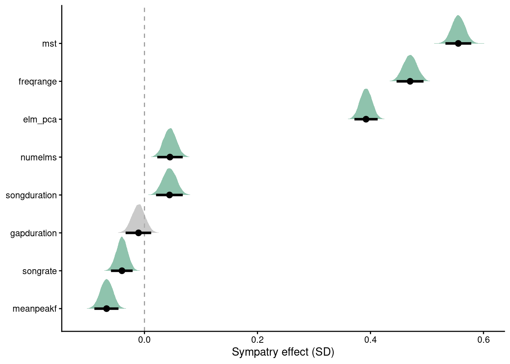
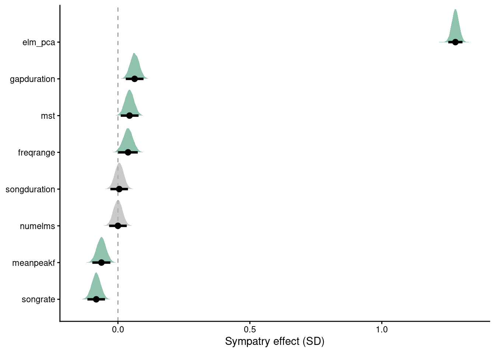

Code
# options to customize chunk outputs
knitr::opts_chunk$set(
message = FALSE
)Vocal character displacement in southern capuchinos
Source code and data found at https://github.com/maRce10/vocal_character_displacement_in_southern_capuchinos
# options to customize chunk outputs
knitr::opts_chunk$set(
message = FALSE
)# install knitr package if not installed
if (!requireNamespace("sketchy", quietly = TRUE)) {
install.packages("sketchy")
}
packages <- c(
"knitr",
"dplyr",
"tidyverse",
"vegan",
"ecodist",
"brms",
github = "maRce10/brmsish",
"kableExtra",
"ggplot2",
"ggtext",
"ggh4x",
github = "stan-dev/cmdstanr"
)
# install/load packages
sketchy::load_packages(packages = packages)
options(knitr.kable.NA = '', brms.file_refit = "never")
# set theme globally
theme_set(theme_classic(base_size = 20))
# custom functions (shared by all reports)
source("./scripts/functions.R")Pairwise data sets created in Data preparation.
step_inputs_simple <- readRDS("./data/processed/step_inputs_simple.rds")
dist_acoustic_long_simple <- step_inputs_simple$dist_acoustic_long
step_inputs_complex <- readRDS("./data/processed/step_inputs_complex.rds")
dist_acoustic_long_complex <- step_inputs_complex$dist_acoustic_longTo evaluate whether acoustic divergence between heterospecific songs differed between sympatric and allopatric population comparisons, we fitted a Bayesian mixed-effects model while accounting for the non-independence inherent to pairwise distance data.
The model was specified as:
\[ \begin{split} \text{acoustic distance} &\sim \text{sympatry} \\ &\quad + (1 \mid \text{species pair}) \\ &\quad + (1 \mid \text{mm(population}_1,\text{population}_2)) \\ &\quad + (1 \mid \text{mm(individual}_1,\text{individual}_2)) \end{split} \]
where:
(_{ij}) is the Euclidean distance between songs (i) and (j) in multivariate acoustic space.
(_{ij}) is a binary predictor indicating whether the populations from which songs (i) and (j) were recorded occur in sympatry (1) or allopatry (0).
species pair is a random intercept accounting for baseline differences in acoustic divergence among heterospecific species combinations.
mm(population(_1), population(_2)) is a multi-membership random effect accounting for repeated use of the same populations across pairwise comparisons.
mm(individual(_1), individual(_2)) is a multi-membership random effect accounting for repeated use of the same individuals across pairwise comparisons.
Model specifications:
The coefficient for sympatry in this model represents the difference in acoustic divergence between sympatric (within-locality) and allopatric (between-locality) heterospecific comparisons, after accounting for the hierarchical structure of the data. The same model structure was fitted separately for the overall PCA-based acoustic distance and for each individual acoustic feature, so that trait-specific effects of sympatry could be examined alongside the overall pattern.
Prepare data for modeling by restricting to species pairs with both sympatric and allopatric comparisons and creating appropriate random effect structures.
Species by location:
# restric to species pairs that have both sympatric and allopatric populations
tab <- table(dist_acoustic_long_simple$species_pair,
dist_acoustic_long_simple$sympatry)
colnames(tab) <- c("allopatric", "sympatric")
keep_pairs <- rownames(tab)[
tab[, "allopatric"] > 0 &
tab[, "sympatric"] > 0
]
# Extract all species-population combinations
sp_pop <- unique(
rbind(
data.frame(
species = dist_acoustic_long_simple$species1,
population = dist_acoustic_long_simple$population1
),
data.frame(
species = dist_acoustic_long_simple$species2,
population = dist_acoustic_long_simple$population2
)
)
)
# Presence/absence table
tab <- with(
sp_pop,
table(species, population)
)
# Convert counts to X / blank
tab[] <- ifelse(tab > 0, "\u2713", "")
presence_table <- as.data.frame.matrix(tab)
presence_table$species <- rownames(presence_table)
presence_table <- presence_table[
, c("species", setdiff(names(presence_table), "species"))
]
print(presence_table)| species | E_Ibera | Entre_Rios | Esperanza | Mar_Chiquita | Salta |
|---|---|---|---|---|---|
| Hypoxantha | ✓ | ✓ | ✓ | ||
| Iberaensis | ✓ | ||||
| Palustris | ✓ | ||||
| Ruficollis | ✓ | ✓ | ✓ | ✓ |
Species pairs by sympatry:
# Species x population occurrence matrix
occ <- as.matrix(tab)
species <- rownames(occ)
# All pairwise species combinations
pairs <- combn(species, 2, simplify = FALSE)
results <- data.frame(
Pair = character(),
Sympatric = character(),
Allopatric = character(),
stringsAsFactors = FALSE
)
for(p in pairs) {
sp1 <- p[1]
sp2 <- p[2]
pops1 <- colnames(occ)[occ[sp1, ] != ""]
pops2 <- colnames(occ)[occ[sp2, ] != ""]
sympatric <- intersect(pops1, pops2)
if(length(sympatric) == 0) {
sympatric_txt <- "none"
} else {
sympatric_txt <- paste(sympatric, collapse = ", ")
}
allopatric <- setdiff(union(pops1, pops2), sympatric)
if(length(allopatric) == 0) {
allopatric_txt <- "none"
} else {
allopatric_txt <- paste(allopatric, collapse = ", ")
}
results <- rbind(
results,
data.frame(
Pair = paste(sp1, sp2, sep = "–"),
Sympatric = sympatric_txt,
Allopatric = allopatric_txt,
stringsAsFactors = FALSE
)
)
}
print(results)| Pair | Sympatric | Allopatric |
|---|---|---|
| Hypoxantha–Iberaensis | E_Ibera | Entre_Rios, Mar_Chiquita |
| Hypoxantha–Palustris | E_Ibera | Entre_Rios, Mar_Chiquita |
| Hypoxantha–Ruficollis | Entre_Rios, Mar_Chiquita | E_Ibera, Esperanza, Salta |
| Iberaensis–Palustris | E_Ibera | none |
| Iberaensis–Ruficollis | none | E_Ibera, Entre_Rios, Esperanza, Mar_Chiquita, Salta |
| Palustris–Ruficollis | none | E_Ibera, Entre_Rios, Esperanza, Mar_Chiquita, Salta |
Only three species pairs were kept: Hypoxantha_Iberaensis, Hypoxantha_Palustris, Hypoxantha_Ruficollis
sympatric_pairs_simple <- dist_acoustic_long_simple[
dist_acoustic_long_simple$species_pair %in%
keep_pairs,
]
# create species-specific population IDs
sympatric_pairs_simple$pop1 <- interaction(
sympatric_pairs_simple$species1,
sympatric_pairs_simple$population1,
drop = TRUE
)
sympatric_pairs_simple$pop2 <- interaction(
sympatric_pairs_simple$species2,
sympatric_pairs_simple$population2,
drop = TRUE
)
# make species_pair a factor (fixed effect)
sympatric_pairs_simple$species_pair <- factor(sympatric_pairs_simple$species_pair)
# scale acoustic_distance
sympatric_pairs_simple$acoustic_distance_sc <- scale(sympatric_pairs_simple$acoustic_distance)# options(brms.file_refit = "on_change")
# weak priors
priors <- c(
# Intercept
prior(normal(0, 5), class = "Intercept"),
# Fixed effect of sympatry
prior(normal(0, 2), class = "b"),
# Random-effect SDs
prior(exponential(1), class = "sd"),
# Residual SD
prior(exponential(1), class = "sigma")
)
#fit model
sympatry_model_simple <- brm(
acoustic_distance_sc ~ sympatry +
(1 | species_pair) +
(1 | mm(pop1, pop2)) +
(1 | mm(individual1, individual2)),
data = sympatric_pairs_simple,
family = gaussian(),
cores = 4,
chains = 4,
prior = priors,
iter = 10000,
backend = "cmdstanr",
threads = threading(8),
control = list(adapt_delta = 0.95, max_treedepth = 15),
file = "./data/processed/fits/acoustic_distance_sympatry_only_simple_fit"
)Before looking at the posterior we check what the priors alone imply for the response. The model below is refitted with sample_prior = "only", so the likelihood is ignored and the draws come purely from the priors. For a standardized response (mean 0, SD 1) the prior predictive distribution should comfortably cover the observed range (roughly -3 to 3) without being absurdly wide; a prior that could only generate values within the observed range would be doing the data’s job, and one spanning hundreds of SDs would not be regularizing anything.
prior_only_simple <- brm(
acoustic_distance_sc ~ sympatry +
(1 | species_pair) +
(1 | mm(pop1, pop2)) +
(1 | mm(individual1, individual2)),
data = sympatric_pairs_simple,
family = gaussian(),
prior = priors,
sample_prior = "only",
chains = 2,
iter = 2000,
cores = 2,
seed = 123,
backend = "cmdstanr",
file = "./data/processed/fits/prior_only_acoustic_distance_sympatry_only_simple"
)
pp_check(prior_only_simple, type = "dens_overlay", ndraws = 50) +
coord_cartesian(xlim = c(-20, 20)) +
labs(
title = "Prior predictive check (simple songs, multivariate model)",
subtitle = "y: observed standardized acoustic distance; y_rep: draws from the priors only"
)
extended_summary(
sympatry_model_simple,
highlight = TRUE,
trace.palette = viridis::mako,
remove.intercepts = TRUE,
print.name = FALSE
)| priors | formula | iterations | chains | thinning | warmup | diverg_transitions | rhats > 1.05 | min_bulk_ESS | min_tail_ESS | seed | |
|---|---|---|---|---|---|---|---|---|---|---|---|
| 1 | b-normal(0, 2) Intercept-normal(0, 5) sd-exponential(1) sigma-exponential(1) | acoustic_distance_sc ~ sympatry + (1 | species_pair) + (1 | mm(pop1, pop2)) + (1 | mm(individual1, individual2)) | 10000 | 4 | 1 | 5000 | 858 (0.043%) | 0 | 19694.17 | 12395.64 | 489747410 |
| Estimate | l-95% CI | u-95% CI | Rhat | Bulk_ESS | Tail_ESS | |
|---|---|---|---|---|---|---|
| b_sympatry1 | 0.227 | 0.204 | 0.25 | 1 | 19694.17 | 12395.64 |

Posterior predictive checks compare the observed data with data simulated from the fitted model (Gelman et al. 2014). Three views: the distribution of the response versus 50 replicated data sets (density overlay); the mean of the response within sympatric and allopatric pairs versus its posterior predictive distribution (the quantity the sympatry coefficient is about); and observed values against their posterior-averaged predictions. The observed data should fall within the range of the replicates.
pp_check(sympatry_model_simple, type = "dens_overlay", ndraws = 50) +
labs(title = "Posterior predictive check (simple songs): density overlay")
pp_check(sympatry_model_simple, type = "stat_grouped", stat = "mean", group = "sympatry", ndraws = 500) +
labs(title = "Posterior predictive check (simple songs): mean by sympatry (0 = allopatric, 1 = sympatric)")
pp_check(sympatry_model_simple, type = "scatter_avg", ndraws = 100) +
labs(title = "Posterior predictive check (simple songs): observed vs. posterior-averaged prediction")
The sampler produced divergent transitions in this model. Divergences mark regions of the posterior that Hamiltonian Monte Carlo could not explore reliably, so estimates from those regions may be biased (Betancourt 2017). Without refitting, the checks below show (1) how many post-warmup draws diverged and whether they are concentrated in one chain, (2) whether divergences pile up at small values of any random-effect SD (a “funnel”; the species-pair SD, estimated from only three levels, is the most likely candidate), and (3) whether the fixed-effect estimates differ between divergent and non-divergent draws. If divergences are confined to a random-effect SD and the fixed effects look the same in both sets of draws, the inference on sympatry is unlikely to be affected. These checks cannot show what the sampler failed to explore, so refitting (e.g. with species pair as a fixed effect) remains the definitive test.
div_simple <- divergence_check(sympatry_model_simple)


print(div_simple$summary)| divergent draws | total draws | % divergent | divergent per chain | max treedepth hits |
|---|---|---|---|---|
| 858 | 20000 | 4.29 | 158 / 91 / 164 / 445 | 0 |
print(div_simple$sd)| parameter | median (non-divergent) | median (divergent) | mean percentile of divergent draws |
|---|---|---|---|
| sd_mmindividual1individual2__Intercept | 0.871 | 0.915 | 0.643 |
| sd_mmpop1pop2__Intercept | 0.367 | 0.321 | 0.525 |
| sd_species_pair__Intercept | 0.155 | 0.573 | 0.729 |
print(div_simple$fixef)| parameter | draws | n | 2.5% | 50% | 97.5% |
|---|---|---|---|---|---|
| b_sympatry1 | non-divergent | 19142 | 0.204 | 0.227 | 0.250 |
| b_sympatry1 | divergent | 858 | 0.206 | 0.236 | 0.248 |
Using the fitted model as is, the expected acoustic distance is computed for every observed combination of populations within each species pair, including the species-pair and population (multi-membership) effects and setting the individual effects to zero (i.e. for an average individual). Sympatric population pairs (the two species recorded at the same locality) are then contrasted against each allopatric population pair of the same species pair; each contrast is computed draw by draw, so its uncertainty interval reflects the joint posterior. Contrasts that share a population pair (e.g. the same sympatric pair against several allopatric ones) are not independent of each other and should be read as a set rather than as separate tests.
pop_contrasts_simple <- population_pair_contrasts(
fit = sympatry_model_simple,
dat = sympatric_pairs_simple
)
base::print(pop_contrasts_simple$plot)
print(pop_contrasts_simple$expected)| Species pair | Population pair | Sympatry | N comparisons | Expected distance | l-95% UI | u-95% UI |
|---|---|---|---|---|---|---|
| Hypoxantha_Iberaensis | Entre_Rios vs E_Ibera | Allopatric | 774 | -0.224 | -0.656 | 0.201 |
| Hypoxantha_Iberaensis | Mar_Chiquita vs E_Ibera | Allopatric | 576 | -0.058 | -0.509 | 0.398 |
| Hypoxantha_Palustris | Entre_Rios vs E_Ibera | Allopatric | 1290 | -0.083 | -0.440 | 0.272 |
| Hypoxantha_Palustris | Mar_Chiquita vs E_Ibera | Allopatric | 960 | 0.084 | -0.294 | 0.505 |
| Hypoxantha_Ruficollis | E_Ibera vs Entre_Rios | Allopatric | 8816 | -0.084 | -0.371 | 0.189 |
| Hypoxantha_Ruficollis | Mar_Chiquita vs Entre_Rios | Allopatric | 2432 | 0.011 | -0.381 | 0.426 |
| Hypoxantha_Ruficollis | E_Ibera vs Esperanza | Allopatric | 5336 | -0.055 | -0.393 | 0.251 |
| Hypoxantha_Ruficollis | Entre_Rios vs Esperanza | Allopatric | 1978 | -0.126 | -0.519 | 0.227 |
| Hypoxantha_Ruficollis | Mar_Chiquita vs Esperanza | Allopatric | 1472 | 0.040 | -0.343 | 0.478 |
| Hypoxantha_Ruficollis | E_Ibera vs Mar_Chiquita | Allopatric | 3248 | -0.088 | -0.412 | 0.212 |
| Hypoxantha_Ruficollis | Entre_Rios vs Mar_Chiquita | Allopatric | 1204 | -0.159 | -0.561 | 0.198 |
| Hypoxantha_Ruficollis | E_Ibera vs Salta | Allopatric | 3480 | 0.265 | -0.135 | 0.718 |
| Hypoxantha_Ruficollis | Entre_Rios vs Salta | Allopatric | 1290 | 0.194 | -0.189 | 0.636 |
| Hypoxantha_Ruficollis | Mar_Chiquita vs Salta | Allopatric | 960 | 0.360 | -0.139 | 0.975 |
| Hypoxantha_Iberaensis | E_Ibera vs E_Ibera | Sympatric | 2088 | 0.074 | -0.306 | 0.439 |
| Hypoxantha_Palustris | E_Ibera vs E_Ibera | Sympatric | 3480 | 0.215 | -0.089 | 0.519 |
| Hypoxantha_Ruficollis | Entre_Rios vs Entre_Rios | Sympatric | 3268 | 0.072 | -0.290 | 0.399 |
| Hypoxantha_Ruficollis | Mar_Chiquita vs Mar_Chiquita | Sympatric | 896 | 0.235 | -0.175 | 0.651 |
print(pop_contrasts_simple$contrasts)| Species pair | Sympatric population pair | Allopatric population pair | Difference | l-95% UI | u-95% UI | UI excludes 0 |
|---|---|---|---|---|---|---|
| Hypoxantha_Iberaensis | E_Ibera vs E_Ibera | Entre_Rios vs E_Ibera | 0.298 | 0.007 | 0.622 | yes |
| Hypoxantha_Iberaensis | E_Ibera vs E_Ibera | Mar_Chiquita vs E_Ibera | 0.132 | -0.256 | 0.452 | no |
| Hypoxantha_Palustris | E_Ibera vs E_Ibera | Entre_Rios vs E_Ibera | 0.298 | 0.007 | 0.622 | yes |
| Hypoxantha_Palustris | E_Ibera vs E_Ibera | Mar_Chiquita vs E_Ibera | 0.132 | -0.256 | 0.452 | no |
| Hypoxantha_Ruficollis | Entre_Rios vs Entre_Rios | E_Ibera vs Entre_Rios | 0.156 | -0.167 | 0.448 | no |
| Hypoxantha_Ruficollis | Entre_Rios vs Entre_Rios | Mar_Chiquita vs Entre_Rios | 0.061 | -0.403 | 0.389 | no |
| Hypoxantha_Ruficollis | Entre_Rios vs Entre_Rios | E_Ibera vs Esperanza | 0.127 | -0.339 | 0.543 | no |
| Hypoxantha_Ruficollis | Entre_Rios vs Entre_Rios | Entre_Rios vs Esperanza | 0.198 | -0.132 | 0.513 | no |
| Hypoxantha_Ruficollis | Entre_Rios vs Entre_Rios | Mar_Chiquita vs Esperanza | 0.031 | -0.537 | 0.479 | no |
| Hypoxantha_Ruficollis | Entre_Rios vs Entre_Rios | E_Ibera vs Mar_Chiquita | 0.159 | -0.263 | 0.576 | no |
| Hypoxantha_Ruficollis | Entre_Rios vs Entre_Rios | Entre_Rios vs Mar_Chiquita | 0.230 | -0.075 | 0.526 | no |
| Hypoxantha_Ruficollis | Entre_Rios vs Entre_Rios | E_Ibera vs Salta | -0.193 | -0.808 | 0.277 | no |
| Hypoxantha_Ruficollis | Entre_Rios vs Entre_Rios | Entre_Rios vs Salta | -0.122 | -0.603 | 0.247 | no |
| Hypoxantha_Ruficollis | Entre_Rios vs Entre_Rios | Mar_Chiquita vs Salta | -0.289 | -1.020 | 0.255 | no |
| Hypoxantha_Ruficollis | Mar_Chiquita vs Mar_Chiquita | E_Ibera vs Entre_Rios | 0.319 | -0.102 | 0.805 | no |
| Hypoxantha_Ruficollis | Mar_Chiquita vs Mar_Chiquita | Mar_Chiquita vs Entre_Rios | 0.224 | -0.078 | 0.537 | no |
| Hypoxantha_Ruficollis | Mar_Chiquita vs Mar_Chiquita | E_Ibera vs Esperanza | 0.290 | -0.177 | 0.796 | no |
| Hypoxantha_Ruficollis | Mar_Chiquita vs Mar_Chiquita | Entre_Rios vs Esperanza | 0.361 | -0.129 | 0.945 | no |
| Hypoxantha_Ruficollis | Mar_Chiquita vs Mar_Chiquita | Mar_Chiquita vs Esperanza | 0.194 | -0.169 | 0.540 | no |
| Hypoxantha_Ruficollis | Mar_Chiquita vs Mar_Chiquita | E_Ibera vs Mar_Chiquita | 0.323 | 0.012 | 0.712 | yes |
| Hypoxantha_Ruficollis | Mar_Chiquita vs Mar_Chiquita | Entre_Rios vs Mar_Chiquita | 0.393 | 0.058 | 0.855 | yes |
| Hypoxantha_Ruficollis | Mar_Chiquita vs Mar_Chiquita | E_Ibera vs Salta | -0.030 | -0.611 | 0.427 | no |
| Hypoxantha_Ruficollis | Mar_Chiquita vs Mar_Chiquita | Entre_Rios vs Salta | 0.041 | -0.532 | 0.512 | no |
| Hypoxantha_Ruficollis | Mar_Chiquita vs Mar_Chiquita | Mar_Chiquita vs Salta | -0.126 | -0.639 | 0.261 | no |
The model above was refitted separately for each acoustic feature used to calculate the overall PCA-based distance, with the same formula, random effects and priors; only the response changes. Results are summarized in a table of fixed-effect estimates below, and the sympatry effect for every feature (plus the PCA-based distance, for comparison) is combined into a single posterior-distribution plot at the end of this section.
# identify all response variables
distance_vars <- grep(
"_distance$",
names(sympatric_pairs_simple),
value = TRUE
)
# remove the overall PCA-based distance (modelled separately above)
distance_vars <- setdiff(distance_vars, "acoustic_distance")# prior predictive check for the trait-level prior set (defined again here
# because the fitting chunk below is not evaluated when rendering), using
# one representative standardized response; the same priors and formula are
# used for every trait, so one check covers the set
priors_trait <- c(
prior(normal(0, 1), class = "Intercept"),
prior(normal(0, 0.5), class = "b"),
prior(exponential(2), class = "sd"),
prior(exponential(1), class = "sigma")
)
sympatric_pairs_simple$freqrange_distance_sc <- as.numeric(scale(sympatric_pairs_simple$freqrange_distance))
prior_only_trait_simple <- brm(
freqrange_distance_sc ~ sympatry +
(1 | species_pair) +
(1 | mm(pop1, pop2)) +
(1 | mm(individual1, individual2)),
data = sympatric_pairs_simple,
family = gaussian(),
prior = priors_trait,
sample_prior = "only",
chains = 2,
iter = 2000,
cores = 2,
seed = 123,
backend = "cmdstanr",
file = "./data/processed/fits/prior_only_trait_level_sympatry_only_simple"
)
pp_check(prior_only_trait_simple, type = "dens_overlay", ndraws = 50) +
coord_cartesian(xlim = c(-10, 10)) +
labs(
title = "Prior predictive check (simple songs, trait-level priors)",
subtitle = "y: observed standardized frequency-range distance; y_rep: draws from the priors only"
)
# scale every per-feature response the same way (mirrors the complex-song
# loop), so all traits and both song types are on a comparable footing
distance_vars_sc <- paste0(distance_vars, "_sc")
for (v in distance_vars) {
sympatric_pairs_simple[[paste0(v, "_sc")]] <- as.numeric(scale(sympatric_pairs_simple[[v]]))
}
# tighter, genuinely regularizing priors now that the response is
# standardized (mean 0, SD 1) - a coefficient near |1| would already be
# an implausibly large effect
priors <- c(
prior(normal(0, 1), class = "Intercept"),
prior(normal(0, 0.5), class = "b"),
prior(exponential(2), class = "sd"),
prior(exponential(1), class = "sigma")
)
for (resp in distance_vars_sc) {
cat("\n=============================\n")
cat("Fitting:", resp, "\n")
cat("=============================\n")
# ----------------------------
# Sympatry only
# ----------------------------
form_sympatry <- bf(
as.formula(
paste0(
resp,
" ~ sympatry + ",
"(1 | species_pair) + ",
"(1 | mm(pop1, pop2)) + ",
"(1 | mm(individual1, individual2))"
)
)
)
mod <- brm(
formula = form_sympatry,
data = sympatric_pairs_simple,
family = gaussian(),
prior = priors,
cores = 4,
chains = 4,
iter = 10000,
backend = "cmdstanr",
threads = threading(8),
control = list(
adapt_delta = 0.95,
max_treedepth = 15
),
file = paste0(
"./data/processed/fits/",
resp,
"_sympatry_only_simple_fit"
)
)
}# Find and load all saved brms models
model_files <- list.files(
"./data/processed/fits",
pattern = "\\.rds$",
full.names = TRUE
)
model_files <- grep("_complex", model_files, value = TRUE, invert = TRUE)
model_files <- grep(paste(distance_vars, collapse = "|"), model_files, value = TRUE)
# not "_distance_sympatry_..." - a response scaled for its own fit (e.g.
# mst_distance_sc) has a suffix between "distance" and "sympatry", which
# would break that stricter match
model_files <- grep("_sympatry_only", model_files, value = TRUE)
plot_posterior_distributions(model_files = model_files)
The table below gives, for every trait-level model above, the posterior mean, standard error and 95% uncertainty interval of each predictor; the last column flags intervals that exclude zero. Like the plot above, it only includes models whose fit file exists.
fixef_tab_simple <- fixef_table(model_files)
if (!is.null(fixef_tab_simple)) print(fixef_tab_simple)| Response | Predictor | Estimate | SE | l-95% UI | u-95% UI | UI excludes 0 |
|---|---|---|---|---|---|---|
| elm_pca | Sympatry | 0.392 | 0.011 | 0.372 | 0.413 | yes |
| freqrange | Sympatry | 0.470 | 0.012 | 0.446 | 0.494 | yes |
| gapduration | Sympatry | -0.011 | 0.012 | -0.033 | 0.012 | no |
| meanpeakf | Sympatry | -0.067 | 0.011 | -0.089 | -0.046 | yes |
| mst | Sympatry | 0.555 | 0.012 | 0.533 | 0.578 | yes |
| numelms | Sympatry | 0.045 | 0.011 | 0.023 | 0.068 | yes |
| songduration | Sympatry | 0.044 | 0.012 | 0.021 | 0.068 | yes |
| songrate | Sympatry | -0.040 | 0.010 | -0.059 | -0.021 | yes |
The expandable section below provides the complete Bayesian model summaries underlying those estimates, including posterior parameter estimates, uncertainty intervals, and convergence diagnostics.
for (i in model_files) {
model_name <- tools::file_path_sans_ext(basename(i))
model_name <- gsub("_sympatry_only.*", "", model_name)
cat("## ", model_name, "\n\n")
extended_summary(
read.file = i,
highlight = TRUE,
trace.palette = viridis::mako,
remove.intercepts = TRUE,
print.name = FALSE
)
cat("\n\n")
}The expandable section below shows a posterior predictive check (density overlay, 50 replicated data sets) for every trait-level model that has finished fitting; models whose fit file is missing are skipped.
for (i in model_files) {
fit <- tryCatch(readRDS(i), error = function(e) NULL)
if (is.null(fit)) next
model_name <- gsub("_sympatry_only.*", "", tools::file_path_sans_ext(basename(i)))
cat("\n\n**", model_name, "**\n\n", sep = "")
# base::print - the document redefines print() as a kable wrapper
base::print(
pp_check(fit, type = "dens_overlay", ndraws = 50) +
labs(title = model_name)
)
cat("\n\n")
rm(fit)
invisible(gc(verbose = FALSE))
}elm_pca_distance_sc

freqrange_distance_sc

gapduration_distance_sc

meanpeakf_distance_sc

mst_distance_sc

numelms_distance_sc

songduration_distance_sc

songrate_distance_sc

The same divergence diagnostics for every trait-level model that has finished fitting: number and percentage of divergent post-warmup draws, divergences per chain, draws that hit the maximum treedepth, the median sympatry coefficient in non-divergent vs divergent draws, and the mean percentile of the divergent draws within the posterior of the species-pair SD (values near 0 indicate divergences piled up at small SD values).
div_tab_simple <- divergence_table(model_files)
if (!is.null(div_tab_simple)) print(div_tab_simple)| response | divergent draws | total draws | % divergent | divergent per chain | max treedepth hits | sympatry median (non-divergent) | sympatry median (divergent) | species-pair SD: mean percentile of divergent draws |
|---|---|---|---|---|---|---|---|---|
| elm_pca | 124 | 20000 | 0.62 | 32 / 62 / 14 / 16 | 0 | 0.392 | 0.390 | 0.533 |
| freqrange | 392 | 20000 | 1.96 | 15 / 190 / 12 / 175 | 0 | 0.470 | 0.471 | 0.533 |
| gapduration | 163 | 20000 | 0.81 | 58 / 48 / 13 / 44 | 0 | -0.011 | -0.009 | 0.641 |
| meanpeakf | 184 | 20000 | 0.92 | 71 / 27 / 51 / 35 | 0 | -0.067 | -0.066 | 0.576 |
| mst | 293 | 20000 | 1.47 | 30 / 60 / 148 / 55 | 0 | 0.555 | 0.556 | 0.597 |
| numelms | 439 | 20000 | 2.20 | 70 / 31 / 278 / 60 | 0 | 0.045 | 0.038 | 0.754 |
| songduration | 403 | 20000 | 2.02 | 116 / 57 / 216 / 14 | 0 | 0.044 | 0.052 | 0.713 |
| songrate | 492 | 20000 | 2.46 | 162 / 66 / 126 / 138 | 0 | -0.040 | -0.040 | 0.545 |
The same population-pair contrasts computed for the overall PCA-based model above, now repeated for every individual acoustic feature that has finished fitting: expected acoustic distance for each observed population pair (species-pair and population multi-membership effects included, individual effects set to zero), then sympatric vs allopatric population-pair differences within each species pair. Each feature gets its own plot (faceted by species pair, as in the main-model version above) rather than being crowded into one combined figure. As with the main-model version, contrasts sharing a population pair are not independent of each other.
pop_contrasts_by_feature_simple <- population_pair_contrasts_by_feature(
model_files = model_files,
dat = sympatric_pairs_simple
)
if (!is.null(pop_contrasts_by_feature_simple)) {
for (feat in names(pop_contrasts_by_feature_simple$plots)) {
cat("\n\n**", feat, "**\n\n", sep = "")
base::print(pop_contrasts_by_feature_simple$plots[[feat]])
cat("\n\n")
}
}elm pca

freqrange

gapduration

meanpeakf

mst

numelms

songduration

songrate

if (!is.null(pop_contrasts_by_feature_simple)) print(pop_contrasts_by_feature_simple$contrasts)| Feature | Species pair | Sympatric population pair | Allopatric population pair | Difference | l-95% UI | u-95% UI | UI excludes 0 |
|---|---|---|---|---|---|---|---|
| elm pca | Hypoxantha_Iberaensis | E_Ibera vs E_Ibera | Entre_Rios vs E_Ibera | 0.468 | 0.220 | 0.772 | yes |
| elm pca | Hypoxantha_Iberaensis | E_Ibera vs E_Ibera | Mar_Chiquita vs E_Ibera | 0.665 | 0.342 | 1.194 | yes |
| elm pca | Hypoxantha_Palustris | E_Ibera vs E_Ibera | Entre_Rios vs E_Ibera | 0.468 | 0.220 | 0.772 | yes |
| elm pca | Hypoxantha_Palustris | E_Ibera vs E_Ibera | Mar_Chiquita vs E_Ibera | 0.665 | 0.342 | 1.194 | yes |
| elm pca | Hypoxantha_Ruficollis | Entre_Rios vs Entre_Rios | E_Ibera vs Entre_Rios | 0.316 | 0.014 | 0.567 | yes |
| elm pca | Hypoxantha_Ruficollis | Entre_Rios vs Entre_Rios | Mar_Chiquita vs Entre_Rios | 0.589 | 0.274 | 1.100 | yes |
| elm pca | Hypoxantha_Ruficollis | Entre_Rios vs Entre_Rios | E_Ibera vs Esperanza | 0.392 | -0.014 | 0.840 | no |
| elm pca | Hypoxantha_Ruficollis | Entre_Rios vs Entre_Rios | Entre_Rios vs Esperanza | 0.468 | 0.160 | 0.828 | yes |
| elm pca | Hypoxantha_Ruficollis | Entre_Rios vs Entre_Rios | Mar_Chiquita vs Esperanza | 0.665 | 0.218 | 1.391 | yes |
| elm pca | Hypoxantha_Ruficollis | Entre_Rios vs Entre_Rios | E_Ibera vs Mar_Chiquita | 0.233 | -0.242 | 0.598 | no |
| elm pca | Hypoxantha_Ruficollis | Entre_Rios vs Entre_Rios | Entre_Rios vs Mar_Chiquita | 0.309 | -0.011 | 0.583 | no |
| elm pca | Hypoxantha_Ruficollis | Entre_Rios vs Entre_Rios | E_Ibera vs Salta | 0.305 | -0.158 | 0.712 | no |
| elm pca | Hypoxantha_Ruficollis | Entre_Rios vs Entre_Rios | Entre_Rios vs Salta | 0.381 | 0.046 | 0.695 | yes |
| elm pca | Hypoxantha_Ruficollis | Entre_Rios vs Entre_Rios | Mar_Chiquita vs Salta | 0.578 | 0.146 | 1.240 | yes |
| elm pca | Hypoxantha_Ruficollis | Mar_Chiquita vs Mar_Chiquita | E_Ibera vs Entre_Rios | 0.203 | -0.352 | 0.607 | no |
| elm pca | Hypoxantha_Ruficollis | Mar_Chiquita vs Mar_Chiquita | Mar_Chiquita vs Entre_Rios | 0.475 | 0.204 | 0.795 | yes |
| elm pca | Hypoxantha_Ruficollis | Mar_Chiquita vs Mar_Chiquita | E_Ibera vs Esperanza | 0.279 | -0.248 | 0.704 | no |
| elm pca | Hypoxantha_Ruficollis | Mar_Chiquita vs Mar_Chiquita | Entre_Rios vs Esperanza | 0.354 | -0.160 | 0.792 | no |
| elm pca | Hypoxantha_Ruficollis | Mar_Chiquita vs Mar_Chiquita | Mar_Chiquita vs Esperanza | 0.551 | 0.248 | 0.990 | yes |
| elm pca | Hypoxantha_Ruficollis | Mar_Chiquita vs Mar_Chiquita | E_Ibera vs Mar_Chiquita | 0.119 | -0.410 | 0.443 | no |
| elm pca | Hypoxantha_Ruficollis | Mar_Chiquita vs Mar_Chiquita | Entre_Rios vs Mar_Chiquita | 0.195 | -0.313 | 0.509 | no |
| elm pca | Hypoxantha_Ruficollis | Mar_Chiquita vs Mar_Chiquita | E_Ibera vs Salta | 0.192 | -0.380 | 0.607 | no |
| elm pca | Hypoxantha_Ruficollis | Mar_Chiquita vs Mar_Chiquita | Entre_Rios vs Salta | 0.268 | -0.298 | 0.692 | no |
| elm pca | Hypoxantha_Ruficollis | Mar_Chiquita vs Mar_Chiquita | Mar_Chiquita vs Salta | 0.465 | 0.169 | 0.826 | yes |
| freqrange | Hypoxantha_Iberaensis | E_Ibera vs E_Ibera | Entre_Rios vs E_Ibera | 0.501 | 0.264 | 0.747 | yes |
| freqrange | Hypoxantha_Iberaensis | E_Ibera vs E_Ibera | Mar_Chiquita vs E_Ibera | 0.081 | -0.337 | 0.464 | no |
| freqrange | Hypoxantha_Palustris | E_Ibera vs E_Ibera | Entre_Rios vs E_Ibera | 0.501 | 0.264 | 0.747 | yes |
| freqrange | Hypoxantha_Palustris | E_Ibera vs E_Ibera | Mar_Chiquita vs E_Ibera | 0.081 | -0.337 | 0.464 | no |
| freqrange | Hypoxantha_Ruficollis | Entre_Rios vs Entre_Rios | E_Ibera vs Entre_Rios | 0.440 | 0.192 | 0.669 | yes |
| freqrange | Hypoxantha_Ruficollis | Entre_Rios vs Entre_Rios | Mar_Chiquita vs Entre_Rios | 0.050 | -0.375 | 0.465 | no |
| freqrange | Hypoxantha_Ruficollis | Entre_Rios vs Entre_Rios | E_Ibera vs Esperanza | 0.398 | 0.022 | 0.742 | yes |
| freqrange | Hypoxantha_Ruficollis | Entre_Rios vs Entre_Rios | Entre_Rios vs Esperanza | 0.428 | 0.150 | 0.690 | yes |
| freqrange | Hypoxantha_Ruficollis | Entre_Rios vs Entre_Rios | Mar_Chiquita vs Esperanza | 0.008 | -0.540 | 0.478 | no |
| freqrange | Hypoxantha_Ruficollis | Entre_Rios vs Entre_Rios | E_Ibera vs Mar_Chiquita | 0.319 | -0.068 | 0.666 | no |
| freqrange | Hypoxantha_Ruficollis | Entre_Rios vs Entre_Rios | Entre_Rios vs Mar_Chiquita | 0.350 | 0.070 | 0.593 | yes |
| freqrange | Hypoxantha_Ruficollis | Entre_Rios vs Entre_Rios | E_Ibera vs Salta | 0.243 | -0.167 | 0.604 | no |
| freqrange | Hypoxantha_Ruficollis | Entre_Rios vs Entre_Rios | Entre_Rios vs Salta | 0.273 | -0.035 | 0.526 | no |
| freqrange | Hypoxantha_Ruficollis | Entre_Rios vs Entre_Rios | Mar_Chiquita vs Salta | -0.147 | -0.734 | 0.460 | no |
| freqrange | Hypoxantha_Ruficollis | Mar_Chiquita vs Mar_Chiquita | E_Ibera vs Entre_Rios | 0.980 | 0.470 | 1.524 | yes |
| freqrange | Hypoxantha_Ruficollis | Mar_Chiquita vs Mar_Chiquita | Mar_Chiquita vs Entre_Rios | 0.591 | 0.349 | 0.870 | yes |
| freqrange | Hypoxantha_Ruficollis | Mar_Chiquita vs Mar_Chiquita | E_Ibera vs Esperanza | 0.938 | 0.456 | 1.478 | yes |
| freqrange | Hypoxantha_Ruficollis | Mar_Chiquita vs Mar_Chiquita | Entre_Rios vs Esperanza | 0.969 | 0.452 | 1.565 | yes |
| freqrange | Hypoxantha_Ruficollis | Mar_Chiquita vs Mar_Chiquita | Mar_Chiquita vs Esperanza | 0.549 | 0.258 | 0.865 | yes |
| freqrange | Hypoxantha_Ruficollis | Mar_Chiquita vs Mar_Chiquita | E_Ibera vs Mar_Chiquita | 0.860 | 0.470 | 1.265 | yes |
| freqrange | Hypoxantha_Ruficollis | Mar_Chiquita vs Mar_Chiquita | Entre_Rios vs Mar_Chiquita | 0.891 | 0.473 | 1.325 | yes |
| freqrange | Hypoxantha_Ruficollis | Mar_Chiquita vs Mar_Chiquita | E_Ibera vs Salta | 0.783 | 0.366 | 1.261 | yes |
| freqrange | Hypoxantha_Ruficollis | Mar_Chiquita vs Mar_Chiquita | Entre_Rios vs Salta | 0.814 | 0.377 | 1.332 | yes |
| freqrange | Hypoxantha_Ruficollis | Mar_Chiquita vs Mar_Chiquita | Mar_Chiquita vs Salta | 0.394 | 0.091 | 0.667 | yes |
| gapduration | Hypoxantha_Iberaensis | E_Ibera vs E_Ibera | Entre_Rios vs E_Ibera | 0.044 | -0.161 | 0.357 | no |
| gapduration | Hypoxantha_Iberaensis | E_Ibera vs E_Ibera | Mar_Chiquita vs E_Ibera | -0.047 | -0.375 | 0.164 | no |
| gapduration | Hypoxantha_Palustris | E_Ibera vs E_Ibera | Entre_Rios vs E_Ibera | 0.044 | -0.161 | 0.357 | no |
| gapduration | Hypoxantha_Palustris | E_Ibera vs E_Ibera | Mar_Chiquita vs E_Ibera | -0.047 | -0.375 | 0.164 | no |
| gapduration | Hypoxantha_Ruficollis | Entre_Rios vs Entre_Rios | E_Ibera vs Entre_Rios | -0.064 | -0.372 | 0.137 | no |
| gapduration | Hypoxantha_Ruficollis | Entre_Rios vs Entre_Rios | Mar_Chiquita vs Entre_Rios | -0.101 | -0.560 | 0.108 | no |
| gapduration | Hypoxantha_Ruficollis | Entre_Rios vs Entre_Rios | E_Ibera vs Esperanza | -0.049 | -0.443 | 0.288 | no |
| gapduration | Hypoxantha_Ruficollis | Entre_Rios vs Entre_Rios | Entre_Rios vs Esperanza | 0.005 | -0.250 | 0.276 | no |
| gapduration | Hypoxantha_Ruficollis | Entre_Rios vs Entre_Rios | Mar_Chiquita vs Esperanza | -0.086 | -0.639 | 0.218 | no |
| gapduration | Hypoxantha_Ruficollis | Entre_Rios vs Entre_Rios | E_Ibera vs Mar_Chiquita | -0.062 | -0.480 | 0.264 | no |
| gapduration | Hypoxantha_Ruficollis | Entre_Rios vs Entre_Rios | Entre_Rios vs Mar_Chiquita | -0.008 | -0.262 | 0.260 | no |
| gapduration | Hypoxantha_Ruficollis | Entre_Rios vs Entre_Rios | E_Ibera vs Salta | -0.071 | -0.518 | 0.242 | no |
| gapduration | Hypoxantha_Ruficollis | Entre_Rios vs Entre_Rios | Entre_Rios vs Salta | -0.018 | -0.291 | 0.242 | no |
| gapduration | Hypoxantha_Ruficollis | Entre_Rios vs Entre_Rios | Mar_Chiquita vs Salta | -0.109 | -0.678 | 0.196 | no |
| gapduration | Hypoxantha_Ruficollis | Mar_Chiquita vs Mar_Chiquita | E_Ibera vs Entre_Rios | 0.025 | -0.304 | 0.435 | no |
| gapduration | Hypoxantha_Ruficollis | Mar_Chiquita vs Mar_Chiquita | Mar_Chiquita vs Entre_Rios | -0.012 | -0.275 | 0.234 | no |
| gapduration | Hypoxantha_Ruficollis | Mar_Chiquita vs Mar_Chiquita | E_Ibera vs Esperanza | 0.040 | -0.292 | 0.496 | no |
| gapduration | Hypoxantha_Ruficollis | Mar_Chiquita vs Mar_Chiquita | Entre_Rios vs Esperanza | 0.094 | -0.207 | 0.670 | no |
| gapduration | Hypoxantha_Ruficollis | Mar_Chiquita vs Mar_Chiquita | Mar_Chiquita vs Esperanza | 0.003 | -0.271 | 0.281 | no |
| gapduration | Hypoxantha_Ruficollis | Mar_Chiquita vs Mar_Chiquita | E_Ibera vs Mar_Chiquita | 0.027 | -0.187 | 0.341 | no |
| gapduration | Hypoxantha_Ruficollis | Mar_Chiquita vs Mar_Chiquita | Entre_Rios vs Mar_Chiquita | 0.081 | -0.137 | 0.532 | no |
| gapduration | Hypoxantha_Ruficollis | Mar_Chiquita vs Mar_Chiquita | E_Ibera vs Salta | 0.018 | -0.314 | 0.408 | no |
| gapduration | Hypoxantha_Ruficollis | Mar_Chiquita vs Mar_Chiquita | Entre_Rios vs Salta | 0.072 | -0.236 | 0.568 | no |
| gapduration | Hypoxantha_Ruficollis | Mar_Chiquita vs Mar_Chiquita | Mar_Chiquita vs Salta | -0.019 | -0.303 | 0.221 | no |
| meanpeakf | Hypoxantha_Iberaensis | E_Ibera vs E_Ibera | Entre_Rios vs E_Ibera | 0.042 | -0.193 | 0.434 | no |
| meanpeakf | Hypoxantha_Iberaensis | E_Ibera vs E_Ibera | Mar_Chiquita vs E_Ibera | 0.003 | -0.289 | 0.385 | no |
| meanpeakf | Hypoxantha_Palustris | E_Ibera vs E_Ibera | Entre_Rios vs E_Ibera | 0.042 | -0.193 | 0.434 | no |
| meanpeakf | Hypoxantha_Palustris | E_Ibera vs E_Ibera | Mar_Chiquita vs E_Ibera | 0.003 | -0.289 | 0.385 | no |
| meanpeakf | Hypoxantha_Ruficollis | Entre_Rios vs Entre_Rios | E_Ibera vs Entre_Rios | -0.177 | -0.552 | 0.060 | no |
| meanpeakf | Hypoxantha_Ruficollis | Entre_Rios vs Entre_Rios | Mar_Chiquita vs Entre_Rios | -0.107 | -0.515 | 0.206 | no |
| meanpeakf | Hypoxantha_Ruficollis | Entre_Rios vs Entre_Rios | E_Ibera vs Esperanza | -0.046 | -0.449 | 0.424 | no |
| meanpeakf | Hypoxantha_Ruficollis | Entre_Rios vs Entre_Rios | Entre_Rios vs Esperanza | 0.064 | -0.201 | 0.512 | no |
| meanpeakf | Hypoxantha_Ruficollis | Entre_Rios vs Entre_Rios | Mar_Chiquita vs Esperanza | 0.024 | -0.384 | 0.615 | no |
| meanpeakf | Hypoxantha_Ruficollis | Entre_Rios vs Entre_Rios | E_Ibera vs Mar_Chiquita | -0.183 | -0.699 | 0.155 | no |
| meanpeakf | Hypoxantha_Ruficollis | Entre_Rios vs Entre_Rios | Entre_Rios vs Mar_Chiquita | -0.074 | -0.388 | 0.230 | no |
| meanpeakf | Hypoxantha_Ruficollis | Entre_Rios vs Entre_Rios | E_Ibera vs Salta | -0.162 | -0.630 | 0.201 | no |
| meanpeakf | Hypoxantha_Ruficollis | Entre_Rios vs Entre_Rios | Entre_Rios vs Salta | -0.053 | -0.360 | 0.259 | no |
| meanpeakf | Hypoxantha_Ruficollis | Entre_Rios vs Entre_Rios | Mar_Chiquita vs Salta | -0.092 | -0.600 | 0.359 | no |
| meanpeakf | Hypoxantha_Ruficollis | Mar_Chiquita vs Mar_Chiquita | E_Ibera vs Entre_Rios | -0.131 | -0.608 | 0.290 | no |
| meanpeakf | Hypoxantha_Ruficollis | Mar_Chiquita vs Mar_Chiquita | Mar_Chiquita vs Entre_Rios | -0.061 | -0.367 | 0.249 | no |
| meanpeakf | Hypoxantha_Ruficollis | Mar_Chiquita vs Mar_Chiquita | E_Ibera vs Esperanza | 0.000 | -0.432 | 0.554 | no |
| meanpeakf | Hypoxantha_Ruficollis | Mar_Chiquita vs Mar_Chiquita | Entre_Rios vs Esperanza | 0.110 | -0.270 | 0.816 | no |
| meanpeakf | Hypoxantha_Ruficollis | Mar_Chiquita vs Mar_Chiquita | Mar_Chiquita vs Esperanza | 0.070 | -0.202 | 0.557 | no |
| meanpeakf | Hypoxantha_Ruficollis | Mar_Chiquita vs Mar_Chiquita | E_Ibera vs Mar_Chiquita | -0.137 | -0.527 | 0.157 | no |
| meanpeakf | Hypoxantha_Ruficollis | Mar_Chiquita vs Mar_Chiquita | Entre_Rios vs Mar_Chiquita | -0.028 | -0.339 | 0.378 | no |
| meanpeakf | Hypoxantha_Ruficollis | Mar_Chiquita vs Mar_Chiquita | E_Ibera vs Salta | -0.116 | -0.601 | 0.331 | no |
| meanpeakf | Hypoxantha_Ruficollis | Mar_Chiquita vs Mar_Chiquita | Entre_Rios vs Salta | -0.007 | -0.436 | 0.558 | no |
| meanpeakf | Hypoxantha_Ruficollis | Mar_Chiquita vs Mar_Chiquita | Mar_Chiquita vs Salta | -0.046 | -0.354 | 0.322 | no |
| mst | Hypoxantha_Iberaensis | E_Ibera vs E_Ibera | Entre_Rios vs E_Ibera | 0.441 | 0.155 | 0.643 | yes |
| mst | Hypoxantha_Iberaensis | E_Ibera vs E_Ibera | Mar_Chiquita vs E_Ibera | 0.298 | -0.161 | 0.585 | no |
| mst | Hypoxantha_Palustris | E_Ibera vs E_Ibera | Entre_Rios vs E_Ibera | 0.441 | 0.155 | 0.643 | yes |
| mst | Hypoxantha_Palustris | E_Ibera vs E_Ibera | Mar_Chiquita vs E_Ibera | 0.298 | -0.161 | 0.585 | no |
| mst | Hypoxantha_Ruficollis | Entre_Rios vs Entre_Rios | E_Ibera vs Entre_Rios | 0.670 | 0.467 | 0.952 | yes |
| mst | Hypoxantha_Ruficollis | Entre_Rios vs Entre_Rios | Mar_Chiquita vs Entre_Rios | 0.413 | -0.015 | 0.661 | no |
| mst | Hypoxantha_Ruficollis | Entre_Rios vs Entre_Rios | E_Ibera vs Esperanza | 0.657 | 0.367 | 1.048 | yes |
| mst | Hypoxantha_Ruficollis | Entre_Rios vs Entre_Rios | Entre_Rios vs Esperanza | 0.543 | 0.292 | 0.783 | yes |
| mst | Hypoxantha_Ruficollis | Entre_Rios vs Entre_Rios | Mar_Chiquita vs Esperanza | 0.400 | -0.098 | 0.736 | no |
| mst | Hypoxantha_Ruficollis | Entre_Rios vs Entre_Rios | E_Ibera vs Mar_Chiquita | 0.627 | 0.309 | 0.966 | yes |
| mst | Hypoxantha_Ruficollis | Entre_Rios vs Entre_Rios | Entre_Rios vs Mar_Chiquita | 0.512 | 0.255 | 0.737 | yes |
| mst | Hypoxantha_Ruficollis | Entre_Rios vs Entre_Rios | E_Ibera vs Salta | 0.649 | 0.356 | 1.012 | yes |
| mst | Hypoxantha_Ruficollis | Entre_Rios vs Entre_Rios | Entre_Rios vs Salta | 0.534 | 0.289 | 0.763 | yes |
| mst | Hypoxantha_Ruficollis | Entre_Rios vs Entre_Rios | Mar_Chiquita vs Salta | 0.391 | -0.113 | 0.720 | no |
| mst | Hypoxantha_Ruficollis | Mar_Chiquita vs Mar_Chiquita | E_Ibera vs Entre_Rios | 0.856 | 0.499 | 1.432 | yes |
| mst | Hypoxantha_Ruficollis | Mar_Chiquita vs Mar_Chiquita | Mar_Chiquita vs Entre_Rios | 0.599 | 0.375 | 0.855 | yes |
| mst | Hypoxantha_Ruficollis | Mar_Chiquita vs Mar_Chiquita | E_Ibera vs Esperanza | 0.843 | 0.494 | 1.397 | yes |
| mst | Hypoxantha_Ruficollis | Mar_Chiquita vs Mar_Chiquita | Entre_Rios vs Esperanza | 0.729 | 0.401 | 1.280 | yes |
| mst | Hypoxantha_Ruficollis | Mar_Chiquita vs Mar_Chiquita | Mar_Chiquita vs Esperanza | 0.586 | 0.330 | 0.873 | yes |
| mst | Hypoxantha_Ruficollis | Mar_Chiquita vs Mar_Chiquita | E_Ibera vs Mar_Chiquita | 0.813 | 0.528 | 1.267 | yes |
| mst | Hypoxantha_Ruficollis | Mar_Chiquita vs Mar_Chiquita | Entre_Rios vs Mar_Chiquita | 0.698 | 0.457 | 1.127 | yes |
| mst | Hypoxantha_Ruficollis | Mar_Chiquita vs Mar_Chiquita | E_Ibera vs Salta | 0.835 | 0.482 | 1.405 | yes |
| mst | Hypoxantha_Ruficollis | Mar_Chiquita vs Mar_Chiquita | Entre_Rios vs Salta | 0.720 | 0.388 | 1.261 | yes |
| mst | Hypoxantha_Ruficollis | Mar_Chiquita vs Mar_Chiquita | Mar_Chiquita vs Salta | 0.577 | 0.326 | 0.863 | yes |
| numelms | Hypoxantha_Iberaensis | E_Ibera vs E_Ibera | Entre_Rios vs E_Ibera | -0.002 | -0.258 | 0.157 | no |
| numelms | Hypoxantha_Iberaensis | E_Ibera vs E_Ibera | Mar_Chiquita vs E_Ibera | 0.027 | -0.204 | 0.217 | no |
| numelms | Hypoxantha_Palustris | E_Ibera vs E_Ibera | Entre_Rios vs E_Ibera | -0.002 | -0.258 | 0.157 | no |
| numelms | Hypoxantha_Palustris | E_Ibera vs E_Ibera | Mar_Chiquita vs E_Ibera | 0.027 | -0.204 | 0.217 | no |
| numelms | Hypoxantha_Ruficollis | Entre_Rios vs Entre_Rios | E_Ibera vs Entre_Rios | 0.091 | -0.067 | 0.346 | no |
| numelms | Hypoxantha_Ruficollis | Entre_Rios vs Entre_Rios | Mar_Chiquita vs Entre_Rios | 0.073 | -0.126 | 0.346 | no |
| numelms | Hypoxantha_Ruficollis | Entre_Rios vs Entre_Rios | E_Ibera vs Esperanza | 0.076 | -0.192 | 0.407 | no |
| numelms | Hypoxantha_Ruficollis | Entre_Rios vs Entre_Rios | Entre_Rios vs Esperanza | 0.030 | -0.182 | 0.220 | no |
| numelms | Hypoxantha_Ruficollis | Entre_Rios vs Entre_Rios | Mar_Chiquita vs Esperanza | 0.059 | -0.239 | 0.363 | no |
| numelms | Hypoxantha_Ruficollis | Entre_Rios vs Entre_Rios | E_Ibera vs Mar_Chiquita | 0.126 | -0.108 | 0.527 | no |
| numelms | Hypoxantha_Ruficollis | Entre_Rios vs Entre_Rios | Entre_Rios vs Mar_Chiquita | 0.079 | -0.090 | 0.338 | no |
| numelms | Hypoxantha_Ruficollis | Entre_Rios vs Entre_Rios | E_Ibera vs Salta | 0.092 | -0.165 | 0.451 | no |
| numelms | Hypoxantha_Ruficollis | Entre_Rios vs Entre_Rios | Entre_Rios vs Salta | 0.046 | -0.171 | 0.279 | no |
| numelms | Hypoxantha_Ruficollis | Entre_Rios vs Entre_Rios | Mar_Chiquita vs Salta | 0.075 | -0.201 | 0.450 | no |
| numelms | Hypoxantha_Ruficollis | Mar_Chiquita vs Mar_Chiquita | E_Ibera vs Entre_Rios | 0.028 | -0.278 | 0.300 | no |
| numelms | Hypoxantha_Ruficollis | Mar_Chiquita vs Mar_Chiquita | Mar_Chiquita vs Entre_Rios | 0.010 | -0.250 | 0.179 | no |
| numelms | Hypoxantha_Ruficollis | Mar_Chiquita vs Mar_Chiquita | E_Ibera vs Esperanza | 0.013 | -0.355 | 0.288 | no |
| numelms | Hypoxantha_Ruficollis | Mar_Chiquita vs Mar_Chiquita | Entre_Rios vs Esperanza | -0.033 | -0.477 | 0.225 | no |
| numelms | Hypoxantha_Ruficollis | Mar_Chiquita vs Mar_Chiquita | Mar_Chiquita vs Esperanza | -0.005 | -0.317 | 0.177 | no |
| numelms | Hypoxantha_Ruficollis | Mar_Chiquita vs Mar_Chiquita | E_Ibera vs Mar_Chiquita | 0.062 | -0.120 | 0.295 | no |
| numelms | Hypoxantha_Ruficollis | Mar_Chiquita vs Mar_Chiquita | Entre_Rios vs Mar_Chiquita | 0.016 | -0.258 | 0.220 | no |
| numelms | Hypoxantha_Ruficollis | Mar_Chiquita vs Mar_Chiquita | E_Ibera vs Salta | 0.029 | -0.292 | 0.323 | no |
| numelms | Hypoxantha_Ruficollis | Mar_Chiquita vs Mar_Chiquita | Entre_Rios vs Salta | -0.017 | -0.441 | 0.246 | no |
| numelms | Hypoxantha_Ruficollis | Mar_Chiquita vs Mar_Chiquita | Mar_Chiquita vs Salta | 0.012 | -0.275 | 0.207 | no |
| songduration | Hypoxantha_Iberaensis | E_Ibera vs E_Ibera | Entre_Rios vs E_Ibera | -0.021 | -0.321 | 0.225 | no |
| songduration | Hypoxantha_Iberaensis | E_Ibera vs E_Ibera | Mar_Chiquita vs E_Ibera | -0.131 | -0.554 | 0.133 | no |
| songduration | Hypoxantha_Palustris | E_Ibera vs E_Ibera | Entre_Rios vs E_Ibera | -0.021 | -0.321 | 0.225 | no |
| songduration | Hypoxantha_Palustris | E_Ibera vs E_Ibera | Mar_Chiquita vs E_Ibera | -0.131 | -0.554 | 0.133 | no |
| songduration | Hypoxantha_Ruficollis | Entre_Rios vs Entre_Rios | E_Ibera vs Entre_Rios | 0.109 | -0.133 | 0.408 | no |
| songduration | Hypoxantha_Ruficollis | Entre_Rios vs Entre_Rios | Mar_Chiquita vs Entre_Rios | -0.066 | -0.473 | 0.218 | no |
| songduration | Hypoxantha_Ruficollis | Entre_Rios vs Entre_Rios | E_Ibera vs Esperanza | 0.055 | -0.321 | 0.452 | no |
| songduration | Hypoxantha_Ruficollis | Entre_Rios vs Entre_Rios | Entre_Rios vs Esperanza | -0.010 | -0.315 | 0.269 | no |
| songduration | Hypoxantha_Ruficollis | Entre_Rios vs Entre_Rios | Mar_Chiquita vs Esperanza | -0.120 | -0.655 | 0.269 | no |
| songduration | Hypoxantha_Ruficollis | Entre_Rios vs Entre_Rios | E_Ibera vs Mar_Chiquita | 0.111 | -0.224 | 0.517 | no |
| songduration | Hypoxantha_Ruficollis | Entre_Rios vs Entre_Rios | Entre_Rios vs Mar_Chiquita | 0.046 | -0.207 | 0.326 | no |
| songduration | Hypoxantha_Ruficollis | Entre_Rios vs Entre_Rios | E_Ibera vs Salta | -0.116 | -0.630 | 0.216 | no |
| songduration | Hypoxantha_Ruficollis | Entre_Rios vs Entre_Rios | Entre_Rios vs Salta | -0.181 | -0.616 | 0.097 | no |
| songduration | Hypoxantha_Ruficollis | Entre_Rios vs Entre_Rios | Mar_Chiquita vs Salta | -0.291 | -0.977 | 0.111 | no |
| songduration | Hypoxantha_Ruficollis | Mar_Chiquita vs Mar_Chiquita | E_Ibera vs Entre_Rios | 0.217 | -0.157 | 0.711 | no |
| songduration | Hypoxantha_Ruficollis | Mar_Chiquita vs Mar_Chiquita | Mar_Chiquita vs Entre_Rios | 0.042 | -0.236 | 0.300 | no |
| songduration | Hypoxantha_Ruficollis | Mar_Chiquita vs Mar_Chiquita | E_Ibera vs Esperanza | 0.163 | -0.221 | 0.667 | no |
| songduration | Hypoxantha_Ruficollis | Mar_Chiquita vs Mar_Chiquita | Entre_Rios vs Esperanza | 0.098 | -0.298 | 0.574 | no |
| songduration | Hypoxantha_Ruficollis | Mar_Chiquita vs Mar_Chiquita | Mar_Chiquita vs Esperanza | -0.012 | -0.356 | 0.262 | no |
| songduration | Hypoxantha_Ruficollis | Mar_Chiquita vs Mar_Chiquita | E_Ibera vs Mar_Chiquita | 0.219 | -0.050 | 0.649 | no |
| songduration | Hypoxantha_Ruficollis | Mar_Chiquita vs Mar_Chiquita | Entre_Rios vs Mar_Chiquita | 0.154 | -0.131 | 0.569 | no |
| songduration | Hypoxantha_Ruficollis | Mar_Chiquita vs Mar_Chiquita | E_Ibera vs Salta | -0.008 | -0.468 | 0.403 | no |
| songduration | Hypoxantha_Ruficollis | Mar_Chiquita vs Mar_Chiquita | Entre_Rios vs Salta | -0.073 | -0.577 | 0.324 | no |
| songduration | Hypoxantha_Ruficollis | Mar_Chiquita vs Mar_Chiquita | Mar_Chiquita vs Salta | -0.183 | -0.658 | 0.115 | no |
| songrate | Hypoxantha_Iberaensis | E_Ibera vs E_Ibera | Entre_Rios vs E_Ibera | 0.049 | -0.373 | 0.484 | no |
| songrate | Hypoxantha_Iberaensis | E_Ibera vs E_Ibera | Mar_Chiquita vs E_Ibera | -0.266 | -0.814 | 0.276 | no |
| songrate | Hypoxantha_Palustris | E_Ibera vs E_Ibera | Entre_Rios vs E_Ibera | 0.049 | -0.373 | 0.484 | no |
| songrate | Hypoxantha_Palustris | E_Ibera vs E_Ibera | Mar_Chiquita vs E_Ibera | -0.266 | -0.814 | 0.276 | no |
| songrate | Hypoxantha_Ruficollis | Entre_Rios vs Entre_Rios | E_Ibera vs Entre_Rios | -0.130 | -0.560 | 0.289 | no |
| songrate | Hypoxantha_Ruficollis | Entre_Rios vs Entre_Rios | Mar_Chiquita vs Entre_Rios | -0.356 | -0.928 | 0.225 | no |
| songrate | Hypoxantha_Ruficollis | Entre_Rios vs Entre_Rios | E_Ibera vs Esperanza | -0.315 | -0.977 | 0.315 | no |
| songrate | Hypoxantha_Ruficollis | Entre_Rios vs Entre_Rios | Entre_Rios vs Esperanza | -0.226 | -0.699 | 0.247 | no |
| songrate | Hypoxantha_Ruficollis | Entre_Rios vs Entre_Rios | Mar_Chiquita vs Esperanza | -0.541 | -1.295 | 0.242 | no |
| songrate | Hypoxantha_Ruficollis | Entre_Rios vs Entre_Rios | E_Ibera vs Mar_Chiquita | -0.244 | -0.899 | 0.376 | no |
| songrate | Hypoxantha_Ruficollis | Entre_Rios vs Entre_Rios | Entre_Rios vs Mar_Chiquita | -0.155 | -0.639 | 0.316 | no |
| songrate | Hypoxantha_Ruficollis | Entre_Rios vs Entre_Rios | E_Ibera vs Salta | -1.213 | -1.972 | -0.436 | yes |
| songrate | Hypoxantha_Ruficollis | Entre_Rios vs Entre_Rios | Entre_Rios vs Salta | -1.124 | -1.707 | -0.475 | yes |
| songrate | Hypoxantha_Ruficollis | Entre_Rios vs Entre_Rios | Mar_Chiquita vs Salta | -1.439 | -2.308 | -0.549 | yes |
| songrate | Hypoxantha_Ruficollis | Mar_Chiquita vs Mar_Chiquita | E_Ibera vs Entre_Rios | 0.301 | -0.426 | 1.040 | no |
| songrate | Hypoxantha_Ruficollis | Mar_Chiquita vs Mar_Chiquita | Mar_Chiquita vs Entre_Rios | 0.075 | -0.389 | 0.560 | no |
| songrate | Hypoxantha_Ruficollis | Mar_Chiquita vs Mar_Chiquita | E_Ibera vs Esperanza | 0.115 | -0.626 | 0.939 | no |
| songrate | Hypoxantha_Ruficollis | Mar_Chiquita vs Mar_Chiquita | Entre_Rios vs Esperanza | 0.205 | -0.529 | 1.011 | no |
| songrate | Hypoxantha_Ruficollis | Mar_Chiquita vs Mar_Chiquita | Mar_Chiquita vs Esperanza | -0.111 | -0.650 | 0.423 | no |
| songrate | Hypoxantha_Ruficollis | Mar_Chiquita vs Mar_Chiquita | E_Ibera vs Mar_Chiquita | 0.186 | -0.343 | 0.745 | no |
| songrate | Hypoxantha_Ruficollis | Mar_Chiquita vs Mar_Chiquita | Entre_Rios vs Mar_Chiquita | 0.275 | -0.305 | 0.847 | no |
| songrate | Hypoxantha_Ruficollis | Mar_Chiquita vs Mar_Chiquita | E_Ibera vs Salta | -0.783 | -1.646 | 0.009 | no |
| songrate | Hypoxantha_Ruficollis | Mar_Chiquita vs Mar_Chiquita | Entre_Rios vs Salta | -0.694 | -1.514 | 0.143 | no |
| songrate | Hypoxantha_Ruficollis | Mar_Chiquita vs Mar_Chiquita | Mar_Chiquita vs Salta | -1.009 | -1.636 | -0.337 | yes |
The plot below combines every simple-song model fitted so far - the song-level PCA-distance model and every per-feature model, including elm_pca_distance - into a single view of the sympatry effect’s full posterior distribution (density, median and 95% credible interval), rather than collapsing each model to a single number. Since models may still be running in the background, this only plots whichever fits have already been saved; it updates automatically as more finish, and produces no error if some (or all) are still missing.
# combine every simple-song fit (main song-level model + all per-feature
# models) into a single plot; safe to run at any point while models are
# still fitting, since plot_posterior_distributions() skips
# missing/unreadable files rather than erroring
model_files_simple <- list.files(
"./data/processed/fits",
pattern = "\\.rds$",
full.names = TRUE
)
model_files_simple <- grep("simple", model_files_simple, value = TRUE)
# sympatry-only fits only (excludes earlier model versions, prior-only
# fits and species-pair slope fits saved in the same folder)
model_files_simple <- grep("sympatry_only_simple_fit", model_files_simple, value = TRUE)
model_files_simple <- grep("by_species_pair|prior_only", model_files_simple, value = TRUE, invert = TRUE)
plot_posterior_distributions(model_files = model_files_simple)
To evaluate whether acoustic divergence between heterospecific songs differed between sympatric and allopatric population comparisons, we fitted a Bayesian mixed-effects model while accounting for the non-independence inherent to pairwise distance data.
The model was specified as:
\[ \begin{split} \text{acoustic distance} &\sim \text{sympatry} \\ &\quad + (1 \mid \text{species pair}) \\ &\quad + (1 \mid \text{mm(population}_1,\text{population}_2)) \\ &\quad + (1 \mid \text{mm(individual}_1,\text{individual}_2)) \end{split} \]
where:
(_{ij}) is the Euclidean distance between songs (i) and (j) in multivariate acoustic space.
(_{ij}) is a binary predictor indicating whether the populations from which songs (i) and (j) were recorded occur in sympatry (1) or allopatry (0).
species pair is a random intercept accounting for baseline differences in acoustic divergence among heterospecific species combinations.
mm(population(_1), population(_2)) is a multi-membership random effect accounting for repeated use of the same populations across pairwise comparisons.
mm(individual(_1), individual(_2)) is a multi-membership random effect accounting for repeated use of the same individuals across pairwise comparisons.
Model specifications:
The coefficient for sympatry in this model represents the difference in acoustic divergence between sympatric (within-locality) and allopatric (between-locality) heterospecific comparisons, after accounting for the hierarchical structure of the data. The same model structure was fitted separately for the overall PCA-based acoustic distance and for each individual acoustic feature, so that trait-specific effects of sympatry could be examined alongside the overall pattern.
Prepare data for modeling by restricting to species pairs with both sympatric and allopatric comparisons and creating appropriate random effect structures.
# restric to species pairs that have both sympatric and allopatric populations
tab <- table(dist_acoustic_long_complex$species_pair,
dist_acoustic_long_complex$sympatry)
colnames(tab) <- c("allopatric", "sympatric")
keep_pairs <- rownames(tab)[
tab[, "allopatric"] > 0 &
tab[, "sympatric"] > 0
]
# Extract all species-population combinations
sp_pop <- unique(
rbind(
data.frame(
species = dist_acoustic_long_complex$species1,
population = dist_acoustic_long_complex$population1
),
data.frame(
species = dist_acoustic_long_complex$species2,
population = dist_acoustic_long_complex$population2
)
)
)
# Presence/absence table
tab <- with(
sp_pop,
table(species, population)
)
# Convert counts to X / blank
tab[] <- ifelse(tab > 0, "\u2713", "")
presence_table <- as.data.frame.matrix(tab)
presence_table$species <- rownames(presence_table)
presence_table <- presence_table[
, c("species", setdiff(names(presence_table), "species"))
]
# print(presence_table)# Species x population occurrence matrix
occ <- as.matrix(tab)
species <- rownames(occ)
# All pairwise species combinations
pairs <- combn(species, 2, simplify = FALSE)
results <- data.frame(
Pair = character(),
Sympatric = character(),
Allopatric = character(),
stringsAsFactors = FALSE
)
for(p in pairs) {
sp1 <- p[1]
sp2 <- p[2]
pops1 <- colnames(occ)[occ[sp1, ] != ""]
pops2 <- colnames(occ)[occ[sp2, ] != ""]
sympatric <- intersect(pops1, pops2)
if(length(sympatric) == 0) {
sympatric_txt <- "none"
} else {
sympatric_txt <- paste(sympatric, collapse = ", ")
}
allopatric <- setdiff(union(pops1, pops2), sympatric)
if(length(allopatric) == 0) {
allopatric_txt <- "none"
} else {
allopatric_txt <- paste(allopatric, collapse = ", ")
}
results <- rbind(
results,
data.frame(
Pair = paste(sp1, sp2, sep = "–"),
Sympatric = sympatric_txt,
Allopatric = allopatric_txt,
stringsAsFactors = FALSE
)
)
}
# print(results)Only three species pairs were kept: Hypoxantha_Iberaensis, Hypoxantha_Palustris, Hypoxantha_Ruficollis
sympatric_pairs_complex <- dist_acoustic_long_complex[
dist_acoustic_long_complex$species_pair %in%
keep_pairs,
]
# create species-specific population IDs
sympatric_pairs_complex$pop1 <- interaction(
sympatric_pairs_complex$species1,
sympatric_pairs_complex$population1,
drop = TRUE
)
sympatric_pairs_complex$pop2 <- interaction(
sympatric_pairs_complex$species2,
sympatric_pairs_complex$population2,
drop = TRUE
)
# make species_pair a factor (fixed effect)
sympatric_pairs_complex$species_pair <- factor(sympatric_pairs_complex$species_pair)
# scale acoustic_distance
sympatric_pairs_complex$acoustic_distance_sc <- scale(sympatric_pairs_complex$acoustic_distance)# weak priors
priors <- c(
# Intercept
prior(normal(0, 5), class = "Intercept"),
# Fixed effect of sympatry
prior(normal(0, 2), class = "b"),
# Random-effect SDs
prior(exponential(1), class = "sd"),
# Residual SD
prior(exponential(1), class = "sigma")
)
#fit model
sympatry_model_complex <- brm(
acoustic_distance_sc ~ sympatry +
(1 | species_pair) +
(1 | mm(pop1, pop2)) +
(1 | mm(individual1, individual2)),
data = sympatric_pairs_complex,
family = gaussian(),
cores = 4,
chains = 4,
prior = priors,
iter = 10000,
backend = "cmdstanr",
threads = threading(8),
control = list(adapt_delta = 0.95, max_treedepth = 15),
file = "./data/processed/fits/acoustic_distance_sympatry_only_complex_fit"
)
# beepr::beep(3)Before looking at the posterior we check what the priors alone imply for the response. The model below is refitted with sample_prior = "only", so the likelihood is ignored and the draws come purely from the priors. For a standardized response (mean 0, SD 1) the prior predictive distribution should comfortably cover the observed range (roughly -3 to 3) without being absurdly wide; a prior that could only generate values within the observed range would be doing the data’s job, and one spanning hundreds of SDs would not be regularizing anything.
prior_only_complex <- brm(
acoustic_distance_sc ~ sympatry +
(1 | species_pair) +
(1 | mm(pop1, pop2)) +
(1 | mm(individual1, individual2)),
data = sympatric_pairs_complex,
family = gaussian(),
prior = priors,
sample_prior = "only",
chains = 2,
iter = 2000,
cores = 2,
seed = 123,
backend = "cmdstanr",
file = "./data/processed/fits/prior_only_acoustic_distance_sympatry_only_complex"
)
pp_check(prior_only_complex, type = "dens_overlay", ndraws = 50) +
coord_cartesian(xlim = c(-20, 20)) +
labs(
title = "Prior predictive check (complex songs, multivariate model)",
subtitle = "y: observed standardized acoustic distance; y_rep: draws from the priors only"
)
extended_summary(
sympatry_model_complex,
highlight = TRUE,
trace.palette = viridis::mako,
remove.intercepts = TRUE,
print.name = FALSE
)| priors | formula | iterations | chains | thinning | warmup | diverg_transitions | rhats > 1.05 | min_bulk_ESS | min_tail_ESS | seed | |
|---|---|---|---|---|---|---|---|---|---|---|---|
| 1 | b-normal(0, 2) Intercept-normal(0, 5) sd-exponential(1) sigma-exponential(1) | acoustic_distance_sc ~ sympatry + (1 | species_pair) + (1 | mm(pop1, pop2)) + (1 | mm(individual1, individual2)) | 10000 | 4 | 1 | 5000 | 383 (0.019%) | 0 | 24774.49 | 13005.21 | 820698594 |
| Estimate | l-95% CI | u-95% CI | Rhat | Bulk_ESS | Tail_ESS | |
|---|---|---|---|---|---|---|
| b_sympatry1 | 0.042 | 0.009 | 0.076 | 1 | 24774.49 | 13005.21 |

Posterior predictive checks compare the observed data with data simulated from the fitted model (Gelman et al. 2014). Three views: the distribution of the response versus 50 replicated data sets (density overlay); the mean of the response within sympatric and allopatric pairs versus its posterior predictive distribution (the quantity the sympatry coefficient is about); and observed values against their posterior-averaged predictions. The observed data should fall within the range of the replicates.
pp_check(sympatry_model_complex, type = "dens_overlay", ndraws = 50) +
labs(title = "Posterior predictive check (complex songs): density overlay")
pp_check(sympatry_model_complex, type = "stat_grouped", stat = "mean", group = "sympatry", ndraws = 500) +
labs(title = "Posterior predictive check (complex songs): mean by sympatry (0 = allopatric, 1 = sympatric)")
pp_check(sympatry_model_complex, type = "scatter_avg", ndraws = 100) +
labs(title = "Posterior predictive check (complex songs): observed vs. posterior-averaged prediction")
The sampler produced divergent transitions in this model. Divergences mark regions of the posterior that Hamiltonian Monte Carlo could not explore reliably, so estimates from those regions may be biased (Betancourt 2017). Without refitting, the checks below show (1) how many post-warmup draws diverged and whether they are concentrated in one chain, (2) whether divergences pile up at small values of any random-effect SD (a “funnel”; the species-pair SD, estimated from only three levels, is the most likely candidate), and (3) whether the fixed-effect estimates differ between divergent and non-divergent draws. If divergences are confined to a random-effect SD and the fixed effects look the same in both sets of draws, the inference on sympatry is unlikely to be affected. These checks cannot show what the sampler failed to explore, so refitting (e.g. with species pair as a fixed effect) remains the definitive test.
div_complex <- divergence_check(sympatry_model_complex)


print(div_complex$summary)| divergent draws | total draws | % divergent | divergent per chain | max treedepth hits |
|---|---|---|---|---|
| 383 | 20000 | 1.92 | 76 / 110 / 123 / 74 | 0 |
print(div_complex$sd)| parameter | median (non-divergent) | median (divergent) | mean percentile of divergent draws |
|---|---|---|---|
| sd_mmindividual1individual2__Intercept | 0.902 | 0.896 | 0.473 |
| sd_mmpop1pop2__Intercept | 0.485 | 0.616 | 0.632 |
| sd_species_pair__Intercept | 0.226 | 0.385 | 0.625 |
print(div_complex$fixef)| parameter | draws | n | 2.5% | 50% | 97.5% |
|---|---|---|---|---|---|
| b_sympatry1 | non-divergent | 19617 | 0.009 | 0.043 | 0.076 |
| b_sympatry1 | divergent | 383 | 0.013 | 0.041 | 0.075 |
Using the fitted model as is, the expected acoustic distance is computed for every observed combination of populations within each species pair, including the species-pair and population (multi-membership) effects and setting the individual effects to zero (i.e. for an average individual). Sympatric population pairs (the two species recorded at the same locality) are then contrasted against each allopatric population pair of the same species pair; each contrast is computed draw by draw, so its uncertainty interval reflects the joint posterior. Contrasts that share a population pair (e.g. the same sympatric pair against several allopatric ones) are not independent of each other and should be read as a set rather than as separate tests.
pop_contrasts_complex <- population_pair_contrasts(
fit = sympatry_model_complex,
dat = sympatric_pairs_complex
)
base::print(pop_contrasts_complex$plot)
print(pop_contrasts_complex$expected)| Species pair | Population pair | Sympatry | N comparisons | Expected distance | l-95% UI | u-95% UI |
|---|---|---|---|---|---|---|
| Hypoxantha_Iberaensis | ER vs EI | Allopatric | 1462 | 0.151 | -0.258 | 0.578 |
| Hypoxantha_Iberaensis | MC vs EI | Allopatric | 816 | 0.081 | -0.455 | 0.650 |
| Hypoxantha_Palustris | ER vs EI | Allopatric | 7310 | 0.212 | -0.084 | 0.524 |
| Hypoxantha_Palustris | MC vs EI | Allopatric | 4080 | 0.142 | -0.308 | 0.628 |
| Hypoxantha_Ruficollis | EI vs ER | Allopatric | 935 | -0.517 | -0.948 | -0.073 |
| Hypoxantha_Ruficollis | MC vs ER | Allopatric | 408 | -0.364 | -0.903 | 0.145 |
| Hypoxantha_Ruficollis | EI vs Sal | Allopatric | 2145 | -0.119 | -0.457 | 0.225 |
| Hypoxantha_Ruficollis | ER vs Sal | Allopatric | 1677 | 0.104 | -0.296 | 0.486 |
| Hypoxantha_Ruficollis | MC vs Sal | Allopatric | 936 | 0.034 | -0.474 | 0.583 |
| Hypoxantha_Iberaensis | EI vs EI | Sympatric | 1870 | -0.030 | -0.435 | 0.393 |
| Hypoxantha_Palustris | EI vs EI | Sympatric | 9350 | 0.031 | -0.265 | 0.313 |
| Hypoxantha_Ruficollis | ER vs ER | Sympatric | 731 | -0.251 | -0.648 | 0.118 |
print(pop_contrasts_complex$contrasts)| Species pair | Sympatric population pair | Allopatric population pair | Difference | l-95% UI | u-95% UI | UI excludes 0 |
|---|---|---|---|---|---|---|
| Hypoxantha_Iberaensis | EI vs EI | ER vs EI | -0.181 | -0.544 | 0.128 | no |
| Hypoxantha_Iberaensis | EI vs EI | MC vs EI | -0.111 | -0.632 | 0.325 | no |
| Hypoxantha_Palustris | EI vs EI | ER vs EI | -0.181 | -0.544 | 0.128 | no |
| Hypoxantha_Palustris | EI vs EI | MC vs EI | -0.111 | -0.632 | 0.325 | no |
| Hypoxantha_Ruficollis | ER vs ER | EI vs ER | 0.266 | -0.049 | 0.631 | no |
| Hypoxantha_Ruficollis | ER vs ER | MC vs ER | 0.113 | -0.362 | 0.583 | no |
| Hypoxantha_Ruficollis | ER vs ER | EI vs Sal | -0.132 | -0.646 | 0.349 | no |
| Hypoxantha_Ruficollis | ER vs ER | ER vs Sal | -0.356 | -0.808 | 0.044 | no |
| Hypoxantha_Ruficollis | ER vs ER | MC vs Sal | -0.285 | -0.973 | 0.274 | no |
The model above was refitted separately for each acoustic feature used to calculate the overall PCA-based distance, with the same formula, random effects and priors; only the response changes. Results are summarized in a table of fixed-effect estimates below, and the sympatry effect for every feature (plus the PCA-based distance, for comparison) is combined into a single posterior-distribution plot at the end of this section.
# identify all response variables
distance_vars <- grep(
"_distance$",
names(sympatric_pairs_complex),
value = TRUE
)
# remove the overall PCA-based distance (modelled separately above)
distance_vars <- setdiff(distance_vars, "acoustic_distance")
# scale mst
# distance_vars[distance_vars == "mst_distance"] <- "mst_distance_sc"
# sympatric_pairs_complex$mst_distance_sc <- scale(sympatric_pairs_complex$mst_distance)# prior predictive check for the trait-level prior set (defined again here
# because the fitting chunk below is not evaluated when rendering), using
# one representative standardized response; the same priors and formula are
# used for every trait, so one check covers the set
priors_trait <- c(
prior(normal(0, 1), class = "Intercept"),
prior(normal(0, 0.5), class = "b"),
prior(exponential(2), class = "sd"),
prior(exponential(1), class = "sigma")
)
sympatric_pairs_complex$freqrange_distance_sc <- as.numeric(scale(sympatric_pairs_complex$freqrange_distance))
prior_only_trait_complex <- brm(
freqrange_distance_sc ~ sympatry +
(1 | species_pair) +
(1 | mm(pop1, pop2)) +
(1 | mm(individual1, individual2)),
data = sympatric_pairs_complex,
family = gaussian(),
prior = priors_trait,
sample_prior = "only",
chains = 2,
iter = 2000,
cores = 2,
seed = 123,
backend = "cmdstanr",
file = "./data/processed/fits/prior_only_trait_level_sympatry_only_complex"
)
pp_check(prior_only_trait_complex, type = "dens_overlay", ndraws = 50) +
coord_cartesian(xlim = c(-10, 10)) +
labs(
title = "Prior predictive check (complex songs, trait-level priors)",
subtitle = "y: observed standardized frequency-range distance; y_rep: draws from the priors only"
)
distance_vars_sc <- paste0(distance_vars, "_sc")
for (v in distance_vars) {
sympatric_pairs_complex[[paste0(v, "_sc")]] <- as.numeric(scale(sympatric_pairs_complex[[v]]))
}
# tighter, genuinely regularizing priors now that the response is
# standardized (mean 0, SD 1) - a coefficient near |1| would already be
# an implausibly large effect
priors <- c(
prior(normal(0, 1), class = "Intercept"),
prior(normal(0, 0.5), class = "b"),
prior(exponential(2), class = "sd"),
prior(exponential(1), class = "sigma")
)
for (resp in distance_vars_sc) {
cat("\n=============================\n")
cat("Fitting:", resp, "\n")
cat("=============================\n")
form_sympatry <- bf(
as.formula(
paste0(
resp,
" ~ sympatry + ",
"(1 | species_pair) + ",
"(1 | mm(pop1, pop2)) + ",
"(1 | mm(individual1, individual2))"
)
)
)
mod <- brm(
formula = form_sympatry,
data = sympatric_pairs_complex,
family = gaussian(),
prior = priors,
cores = 4, chains = 4, iter = 10000,
backend = "cmdstanr", threads = threading(8),
control = list(adapt_delta = 0.95, max_treedepth = 15),
file = paste0("./data/processed/fits/", resp, "_sympatry_only_complex_fit")
)
}# Find and load all saved brms models
model_files <- list.files(
"./data/processed/fits",
pattern = "\\.rds$",
full.names = TRUE
)
model_files <- grep("_complex", model_files, value = TRUE)
model_files <- grep(paste(distance_vars, collapse = "|"), model_files, value = TRUE)
# not "_distance_sympatry_..." - every complex per-feature response is
# refit under a "_sc" suffix (see distance_vars_sc above), which sits
# between "distance" and "sympatry" and would break that stricter match
model_files <- grep("_sympatry_only", model_files, value = TRUE)
plot_posterior_distributions(model_files = model_files)
The table below gives, for every trait-level model above, the posterior mean, standard error and 95% uncertainty interval of each predictor; the last column flags intervals that exclude zero. Like the heatmap, it only includes models whose fit file exists.
fixef_tab_complex <- fixef_table(model_files)
if (!is.null(fixef_tab_complex)) print(fixef_tab_complex)| Response | Predictor | Estimate | SE | l-95% UI | u-95% UI | UI excludes 0 |
|---|---|---|---|---|---|---|
| elm_pca | Sympatry | 1.279 | 0.014 | 1.252 | 1.306 | yes |
| freqrange | Sympatry | 0.038 | 0.019 | 0.001 | 0.075 | yes |
| gapduration | Sympatry | 0.063 | 0.017 | 0.030 | 0.097 | yes |
| meanpeakf | Sympatry | -0.063 | 0.017 | -0.097 | -0.029 | yes |
| mst | Sympatry | 0.044 | 0.017 | 0.010 | 0.078 | yes |
| numelms | Sympatry | 0.000 | 0.017 | -0.033 | 0.033 | no |
| songduration | Sympatry | 0.005 | 0.017 | -0.029 | 0.038 | no |
| songrate | Sympatry | -0.082 | 0.017 | -0.116 | -0.049 | yes |
The expandable section below provides the complete Bayesian model summaries underlying those estimates, including posterior parameter estimates, uncertainty intervals, and convergence diagnostics.
for (i in model_files) {
model_name <- tools::file_path_sans_ext(basename(i))
model_name <- gsub("_sympatry_only.*", "", model_name)
cat("## ", model_name, "\n\n")
extended_summary(
read.file = i,
highlight = TRUE,
trace.palette = viridis::mako,
remove.intercepts = TRUE,
print.name = FALSE
)
cat("\n\n")
}The expandable section below shows a posterior predictive check (density overlay, 50 replicated data sets) for every trait-level model that has finished fitting; models whose fit file is missing are skipped.
for (i in model_files) {
fit <- tryCatch(readRDS(i), error = function(e) NULL)
if (is.null(fit)) next
model_name <- gsub("_sympatry_only.*", "", tools::file_path_sans_ext(basename(i)))
cat("\n\n**", model_name, "**\n\n", sep = "")
# base::print - the document redefines print() as a kable wrapper
base::print(
pp_check(fit, type = "dens_overlay", ndraws = 50) +
labs(title = model_name)
)
cat("\n\n")
rm(fit)
invisible(gc(verbose = FALSE))
}elm_pca_distance_sc

freqrange_distance_sc

gapduration_distance_sc

meanpeakf_distance_sc

mst_distance_sc

numelms_distance_sc

songduration_distance_sc

songrate_distance_sc

The same divergence diagnostics for every trait-level model that has finished fitting: number and percentage of divergent post-warmup draws, divergences per chain, draws that hit the maximum treedepth, the median sympatry coefficient in non-divergent vs divergent draws, and the mean percentile of the divergent draws within the posterior of the species-pair SD (values near 0 indicate divergences piled up at small SD values).
div_tab_complex <- divergence_table(model_files)
if (!is.null(div_tab_complex)) print(div_tab_complex)| response | divergent draws | total draws | % divergent | divergent per chain | max treedepth hits | sympatry median (non-divergent) | sympatry median (divergent) | species-pair SD: mean percentile of divergent draws |
|---|---|---|---|---|---|---|---|---|
| elm_pca | 184 | 20000 | 0.92 | 10 / 56 / 48 / 70 | 0 | 1.279 | 1.279 | 0.580 |
| freqrange | 343 | 20000 | 1.71 | 111 / 99 / 44 / 89 | 0 | 0.038 | 0.037 | 0.571 |
| gapduration | 340 | 20000 | 1.70 | 57 / 104 / 93 / 86 | 0 | 0.063 | 0.065 | 0.605 |
| meanpeakf | 325 | 20000 | 1.62 | 31 / 166 / 56 / 72 | 0 | -0.063 | -0.063 | 0.655 |
| mst | 226 | 20000 | 1.13 | 66 / 45 / 31 / 84 | 0 | 0.044 | 0.047 | 0.624 |
| numelms | 219 | 20000 | 1.09 | 78 / 31 / 23 / 87 | 0 | 0.000 | 0.001 | 0.610 |
| songduration | 280 | 20000 | 1.40 | 78 / 166 / 19 / 17 | 0 | 0.005 | 0.006 | 0.554 |
| songrate | 89 | 20000 | 0.44 | 19 / 59 / 7 / 4 | 0 | -0.082 | -0.085 | 0.459 |
The same population-pair contrasts computed for the overall PCA-based model above, now repeated for every individual acoustic feature that has finished fitting: expected acoustic distance for each observed population pair (species-pair and population multi-membership effects included, individual effects set to zero), then sympatric vs allopatric population-pair differences within each species pair. Each feature gets its own plot (faceted by species pair, as in the main-model version above) rather than being crowded into one combined figure. As with the main-model version, contrasts sharing a population pair are not independent of each other.
pop_contrasts_by_feature_complex <- population_pair_contrasts_by_feature(
model_files = model_files,
dat = sympatric_pairs_complex
)
if (!is.null(pop_contrasts_by_feature_complex)) {
for (feat in names(pop_contrasts_by_feature_complex$plots)) {
cat("\n\n**", feat, "**\n\n", sep = "")
base::print(pop_contrasts_by_feature_complex$plots[[feat]])
cat("\n\n")
}
}elm pca

freqrange

gapduration

meanpeakf

mst

numelms

songduration

songrate

if (!is.null(pop_contrasts_by_feature_complex)) print(pop_contrasts_by_feature_complex$contrasts)| Feature | Species pair | Sympatric population pair | Allopatric population pair | Difference | l-95% UI | u-95% UI | UI excludes 0 |
|---|---|---|---|---|---|---|---|
| elm pca | Hypoxantha_Iberaensis | EI vs EI | ER vs EI | 1.237 | 1.011 | 1.431 | yes |
| elm pca | Hypoxantha_Iberaensis | EI vs EI | MC vs EI | 1.314 | 1.069 | 1.638 | yes |
| elm pca | Hypoxantha_Palustris | EI vs EI | ER vs EI | 1.237 | 1.011 | 1.431 | yes |
| elm pca | Hypoxantha_Palustris | EI vs EI | MC vs EI | 1.314 | 1.069 | 1.638 | yes |
| elm pca | Hypoxantha_Ruficollis | ER vs ER | EI vs ER | 1.320 | 1.127 | 1.548 | yes |
| elm pca | Hypoxantha_Ruficollis | ER vs ER | MC vs ER | 1.355 | 1.125 | 1.727 | yes |
| elm pca | Hypoxantha_Ruficollis | ER vs ER | EI vs Sal | 1.206 | 0.855 | 1.482 | yes |
| elm pca | Hypoxantha_Ruficollis | ER vs ER | ER vs Sal | 1.165 | 0.882 | 1.358 | yes |
| elm pca | Hypoxantha_Ruficollis | ER vs ER | MC vs Sal | 1.242 | 0.883 | 1.608 | yes |
| freqrange | Hypoxantha_Iberaensis | EI vs EI | ER vs EI | -0.402 | -0.778 | -0.019 | yes |
| freqrange | Hypoxantha_Iberaensis | EI vs EI | MC vs EI | -0.163 | -0.631 | 0.261 | no |
| freqrange | Hypoxantha_Palustris | EI vs EI | ER vs EI | -0.402 | -0.778 | -0.019 | yes |
| freqrange | Hypoxantha_Palustris | EI vs EI | MC vs EI | -0.163 | -0.631 | 0.261 | no |
| freqrange | Hypoxantha_Ruficollis | ER vs ER | EI vs ER | 0.477 | 0.088 | 0.851 | yes |
| freqrange | Hypoxantha_Ruficollis | ER vs ER | MC vs ER | 0.276 | -0.178 | 0.800 | no |
| freqrange | Hypoxantha_Ruficollis | ER vs ER | EI vs Sal | 0.184 | -0.242 | 0.634 | no |
| freqrange | Hypoxantha_Ruficollis | ER vs ER | ER vs Sal | -0.255 | -0.610 | 0.080 | no |
| freqrange | Hypoxantha_Ruficollis | ER vs ER | MC vs Sal | -0.016 | -0.555 | 0.536 | no |
| gapduration | Hypoxantha_Iberaensis | EI vs EI | ER vs EI | -0.037 | -0.360 | 0.155 | no |
| gapduration | Hypoxantha_Iberaensis | EI vs EI | MC vs EI | 0.013 | -0.327 | 0.280 | no |
| gapduration | Hypoxantha_Palustris | EI vs EI | ER vs EI | -0.037 | -0.360 | 0.155 | no |
| gapduration | Hypoxantha_Palustris | EI vs EI | MC vs EI | 0.013 | -0.327 | 0.280 | no |
| gapduration | Hypoxantha_Ruficollis | ER vs ER | EI vs ER | 0.163 | -0.031 | 0.483 | no |
| gapduration | Hypoxantha_Ruficollis | ER vs ER | MC vs ER | 0.113 | -0.166 | 0.451 | no |
| gapduration | Hypoxantha_Ruficollis | ER vs ER | EI vs Sal | 0.069 | -0.270 | 0.396 | no |
| gapduration | Hypoxantha_Ruficollis | ER vs ER | ER vs Sal | -0.031 | -0.361 | 0.178 | no |
| gapduration | Hypoxantha_Ruficollis | ER vs ER | MC vs Sal | 0.019 | -0.410 | 0.376 | no |
| meanpeakf | Hypoxantha_Iberaensis | EI vs EI | ER vs EI | -0.064 | -0.282 | 0.133 | no |
| meanpeakf | Hypoxantha_Iberaensis | EI vs EI | MC vs EI | -0.051 | -0.290 | 0.223 | no |
| meanpeakf | Hypoxantha_Palustris | EI vs EI | ER vs EI | -0.064 | -0.282 | 0.133 | no |
| meanpeakf | Hypoxantha_Palustris | EI vs EI | MC vs EI | -0.051 | -0.290 | 0.223 | no |
| meanpeakf | Hypoxantha_Ruficollis | ER vs ER | EI vs ER | -0.062 | -0.271 | 0.155 | no |
| meanpeakf | Hypoxantha_Ruficollis | ER vs ER | MC vs ER | -0.049 | -0.267 | 0.241 | no |
| meanpeakf | Hypoxantha_Ruficollis | ER vs ER | EI vs Sal | -0.078 | -0.387 | 0.207 | no |
| meanpeakf | Hypoxantha_Ruficollis | ER vs ER | ER vs Sal | -0.079 | -0.311 | 0.116 | no |
| meanpeakf | Hypoxantha_Ruficollis | ER vs ER | MC vs Sal | -0.066 | -0.421 | 0.254 | no |
| mst | Hypoxantha_Iberaensis | EI vs EI | ER vs EI | -0.091 | -0.438 | 0.223 | no |
| mst | Hypoxantha_Iberaensis | EI vs EI | MC vs EI | -0.086 | -0.598 | 0.365 | no |
| mst | Hypoxantha_Palustris | EI vs EI | ER vs EI | -0.091 | -0.438 | 0.223 | no |
| mst | Hypoxantha_Palustris | EI vs EI | MC vs EI | -0.086 | -0.598 | 0.365 | no |
| mst | Hypoxantha_Ruficollis | ER vs ER | EI vs ER | 0.179 | -0.134 | 0.531 | no |
| mst | Hypoxantha_Ruficollis | ER vs ER | MC vs ER | 0.049 | -0.450 | 0.547 | no |
| mst | Hypoxantha_Ruficollis | ER vs ER | EI vs Sal | -0.275 | -0.810 | 0.197 | no |
| mst | Hypoxantha_Ruficollis | ER vs ER | ER vs Sal | -0.410 | -0.841 | 0.046 | no |
| mst | Hypoxantha_Ruficollis | ER vs ER | MC vs Sal | -0.406 | -1.142 | 0.184 | no |
| numelms | Hypoxantha_Iberaensis | EI vs EI | ER vs EI | -0.027 | -0.307 | 0.223 | no |
| numelms | Hypoxantha_Iberaensis | EI vs EI | MC vs EI | -0.014 | -0.376 | 0.334 | no |
| numelms | Hypoxantha_Palustris | EI vs EI | ER vs EI | -0.027 | -0.307 | 0.223 | no |
| numelms | Hypoxantha_Palustris | EI vs EI | MC vs EI | -0.014 | -0.376 | 0.334 | no |
| numelms | Hypoxantha_Ruficollis | ER vs ER | EI vs ER | 0.027 | -0.228 | 0.317 | no |
| numelms | Hypoxantha_Ruficollis | ER vs ER | MC vs ER | 0.013 | -0.343 | 0.412 | no |
| numelms | Hypoxantha_Ruficollis | ER vs ER | EI vs Sal | -0.141 | -0.628 | 0.193 | no |
| numelms | Hypoxantha_Ruficollis | ER vs ER | ER vs Sal | -0.168 | -0.585 | 0.067 | no |
| numelms | Hypoxantha_Ruficollis | ER vs ER | MC vs Sal | -0.155 | -0.726 | 0.233 | no |
| songduration | Hypoxantha_Iberaensis | EI vs EI | ER vs EI | -0.048 | -0.345 | 0.223 | no |
| songduration | Hypoxantha_Iberaensis | EI vs EI | MC vs EI | -0.010 | -0.400 | 0.376 | no |
| songduration | Hypoxantha_Palustris | EI vs EI | ER vs EI | -0.048 | -0.345 | 0.223 | no |
| songduration | Hypoxantha_Palustris | EI vs EI | MC vs EI | -0.010 | -0.400 | 0.376 | no |
| songduration | Hypoxantha_Ruficollis | ER vs ER | EI vs ER | 0.059 | -0.218 | 0.362 | no |
| songduration | Hypoxantha_Ruficollis | ER vs ER | MC vs ER | 0.044 | -0.340 | 0.487 | no |
| songduration | Hypoxantha_Ruficollis | ER vs ER | EI vs Sal | -0.146 | -0.662 | 0.208 | no |
| songduration | Hypoxantha_Ruficollis | ER vs ER | ER vs Sal | -0.200 | -0.623 | 0.062 | no |
| songduration | Hypoxantha_Ruficollis | ER vs ER | MC vs Sal | -0.161 | -0.751 | 0.240 | no |
| songrate | Hypoxantha_Iberaensis | EI vs EI | ER vs EI | -0.090 | -0.321 | 0.122 | no |
| songrate | Hypoxantha_Iberaensis | EI vs EI | MC vs EI | -0.130 | -0.498 | 0.114 | no |
| songrate | Hypoxantha_Palustris | EI vs EI | ER vs EI | -0.090 | -0.321 | 0.122 | no |
| songrate | Hypoxantha_Palustris | EI vs EI | MC vs EI | -0.130 | -0.498 | 0.114 | no |
| songrate | Hypoxantha_Ruficollis | ER vs ER | EI vs ER | -0.074 | -0.290 | 0.166 | no |
| songrate | Hypoxantha_Ruficollis | ER vs ER | MC vs ER | -0.122 | -0.488 | 0.134 | no |
| songrate | Hypoxantha_Ruficollis | ER vs ER | EI vs Sal | -0.111 | -0.432 | 0.182 | no |
| songrate | Hypoxantha_Ruficollis | ER vs ER | ER vs Sal | -0.119 | -0.377 | 0.085 | no |
| songrate | Hypoxantha_Ruficollis | ER vs ER | MC vs Sal | -0.159 | -0.658 | 0.163 | no |
The plot below combines every complex-song model fitted so far - the song-level PCA-distance model and every per-feature model, including elm_pca_distance - into a single view of the sympatry effect’s full posterior distribution (density, median and 95% credible interval), rather than collapsing each model to a single number. Since models may still be running in the background, this only plots whichever fits have already been saved; it updates automatically as more finish, and produces no error if some (or all) are still missing.
# combine every complex-song fit (main song-level model + all
# per-feature models) into a single plot; safe to run at any point
# while models are still fitting, since plot_posterior_distributions()
# skips missing/unreadable files rather than erroring
model_files_complex <- list.files(
"./data/processed/fits",
pattern = "\\.rds$",
full.names = TRUE
)
model_files_complex <- grep("complex", model_files_complex, value = TRUE)
# sympatry-only fits only (excludes earlier model versions, prior-only
# fits and species-pair slope fits saved in the same folder)
model_files_complex <- grep("sympatry_only_complex_fit", model_files_complex, value = TRUE)
model_files_complex <- grep("by_species_pair|prior_only", model_files_complex, value = TRUE, invert = TRUE)
plot_posterior_distributions(model_files = model_files_complex)
─ Session info ───────────────────────────────────────────────────────────────
setting value
version R version 4.5.2 (2025-10-31)
os Ubuntu 22.04.4 LTS
system x86_64, linux-gnu
ui X11
language (EN)
collate en_US.UTF-8
ctype en_US.UTF-8
tz America/Costa_Rica
date 2026-10-19
pandoc 3.8.3 @ /usr/lib/rstudio/resources/app/bin/quarto/bin/tools/x86_64/ (via rmarkdown)
quarto 1.9.38 @ /usr/lib/rstudio/resources/app/bin/quarto/bin/quarto
─ Packages ───────────────────────────────────────────────────────────────────
package * version date (UTC) lib source
abind 1.4-8 2024-09-12 [1] CRAN (R 4.5.2)
ape 5.8-1 2024-12-16 [1] CRAN (R 4.5.2)
arrayhelpers 1.1-0 2020-02-04 [1] CRAN (R 4.5.2)
backports 1.5.1 2026-04-03 [1] CRAN (R 4.5.2)
bayesplot 1.15.0 2025-12-12 [1] CRAN (R 4.5.2)
bridgesampling 1.2-1 2025-11-19 [1] CRAN (R 4.5.2)
brms * 2.23.0 2025-09-09 [1] CRAN (R 4.5.2)
brmsish * 1.0.0 2026-03-03 [1] Github (maRce10/brmsish@81ab826)
Brobdingnag 1.2-9 2022-10-19 [1] CRAN (R 4.5.2)
cachem 1.1.0 2024-05-16 [1] CRAN (R 4.5.2)
checkmate 2.3.4 2026-02-03 [1] CRAN (R 4.5.2)
cli 3.6.6 2026-04-09 [1] CRAN (R 4.5.2)
cluster 2.1.8.2 2026-02-05 [1] CRAN (R 4.5.2)
cmdstanr * 0.9.0 2025-03-30 [1] https://stan-dev.r-universe.dev (R 4.5.2)
coda 0.19-4.1 2024-01-31 [1] CRAN (R 4.5.2)
codetools 0.2-20 2024-03-31 [1] CRAN (R 4.5.2)
cowplot 1.2.0 2025-07-07 [1] CRAN (R 4.5.2)
crayon 1.5.3 2024-06-20 [1] CRAN (R 4.5.2)
curl 8.1.0 2026-10-14 [1] CRAN (R 4.5.2)
devtools 2.4.6 2025-10-03 [1] CRAN (R 4.5.2)
digest 0.6.39 2025-11-19 [1] CRAN (R 4.5.2)
distributional 0.6.0 2026-01-14 [1] CRAN (R 4.5.2)
dplyr * 1.2.1 2026-04-03 [1] CRAN (R 4.5.2)
ecodist * 2.1.3 2023-10-30 [1] CRAN (R 4.5.2)
ellipsis 0.3.2 2021-04-29 [3] CRAN (R 4.1.1)
emmeans 2.0.4 2026-07-15 [1] CRAN (R 4.5.2)
estimability 2.0.0 2026-06-26 [1] CRAN (R 4.5.2)
evaluate 1.0.5 2025-08-27 [1] CRAN (R 4.5.2)
farver 2.1.2 2024-05-13 [1] CRAN (R 4.5.2)
fastmap 1.2.0 2024-05-15 [1] CRAN (R 4.5.2)
forcats * 1.0.1 2025-09-25 [1] CRAN (R 4.5.2)
fs 2.1.0 2026-04-18 [1] CRAN (R 4.5.2)
generics 0.1.4 2025-05-09 [1] CRAN (R 4.5.2)
ggdist 3.3.3 2025-04-23 [1] CRAN (R 4.5.2)
ggh4x * 0.3.1 2025-05-30 [1] CRAN (R 4.5.2)
ggplot2 * 4.0.3 2026-04-22 [1] CRAN (R 4.5.2)
ggtext * 0.2.0 2026-08-28 [1] CRAN (R 4.5.2)
glue 1.8.1 2026-04-17 [1] CRAN (R 4.5.2)
gridExtra 2.3.1 2026-06-25 [1] CRAN (R 4.5.2)
gridtext 0.1.6 2026-02-19 [1] CRAN (R 4.5.2)
gtable 0.3.6 2024-10-25 [1] CRAN (R 4.5.2)
hms 1.1.4 2025-10-17 [1] CRAN (R 4.5.2)
htmltools 0.5.9 2025-12-04 [1] CRAN (R 4.5.2)
htmlwidgets 1.6.4 2023-12-06 [1] CRAN (R 4.5.2)
igraph 2.3.4 2026-09-30 [1] CRAN (R 4.5.2)
inline 0.3.21 2025-01-09 [1] CRAN (R 4.5.2)
jsonlite 2.0.0 2025-03-27 [1] CRAN (R 4.5.2)
kableExtra * 1.4.0 2024-01-24 [1] CRAN (R 4.5.2)
knitr * 1.52 2026-09-06 [1] CRAN (R 4.5.2)
labeling 0.4.3 2023-08-29 [1] CRAN (R 4.5.2)
lattice 0.22-9 2026-02-09 [1] CRAN (R 4.5.2)
lifecycle 1.0.5 2026-01-08 [1] CRAN (R 4.5.2)
loo 2.9.0 2025-12-23 [1] CRAN (R 4.5.2)
lubridate * 1.9.5 2026-02-04 [1] CRAN (R 4.5.2)
magrittr 2.0.5 2026-04-04 [1] CRAN (R 4.5.2)
MASS 7.3-65 2025-02-28 [1] CRAN (R 4.5.2)
Matrix 1.7-4 2025-08-28 [1] CRAN (R 4.5.2)
matrixStats 1.5.0 2025-01-07 [1] CRAN (R 4.5.2)
memoise 2.0.1 2021-11-26 [3] CRAN (R 4.1.2)
mgcv 1.9-4 2025-11-07 [1] CRAN (R 4.5.2)
multcomp 1.4-29 2025-10-20 [1] CRAN (R 4.5.2)
mvtnorm 1.3-3 2025-01-10 [1] CRAN (R 4.5.2)
nlme 3.1-168 2025-03-31 [1] CRAN (R 4.5.2)
otel 0.2.0 2025-08-29 [1] CRAN (R 4.5.2)
pbapply 1.7-5 2026-09-01 [1] CRAN (R 4.5.2)
permute * 0.9-10 2026-02-06 [1] CRAN (R 4.5.2)
pillar 1.11.1 2025-09-17 [1] CRAN (R 4.5.2)
pkgbuild 1.4.8 2025-05-26 [1] CRAN (R 4.5.2)
pkgconfig 2.0.3 2019-09-22 [3] CRAN (R 4.0.1)
pkgload 1.5.3 2026-06-15 [1] CRAN (R 4.5.2)
plyr 1.8.9 2023-10-02 [1] CRAN (R 4.5.2)
posterior 1.6.1 2025-02-27 [1] CRAN (R 4.5.2)
processx 3.9.0 2026-04-22 [1] CRAN (R 4.5.2)
ps 1.9.3 2026-04-20 [1] CRAN (R 4.5.2)
purrr * 1.2.2 2026-04-10 [1] CRAN (R 4.5.2)
QuickJSR 1.9.0 2026-01-25 [1] CRAN (R 4.5.2)
R6 2.6.1 2025-02-15 [1] CRAN (R 4.5.2)
RColorBrewer 1.1-3 2022-04-03 [1] CRAN (R 4.5.2)
Rcpp * 1.1.2 2026-07-05 [1] CRAN (R 4.5.2)
RcppParallel 5.1.11-2 2026-03-05 [1] CRAN (R 4.5.2)
readr * 2.2.0 2026-02-19 [1] CRAN (R 4.5.2)
remotes 2.5.0 2024-03-17 [1] CRAN (R 4.5.2)
reshape2 1.4.5 2025-11-12 [1] CRAN (R 4.5.2)
rlang 1.3.0 2026-07-05 [1] CRAN (R 4.5.2)
rmarkdown 2.32 2026-09-01 [1] CRAN (R 4.5.2)
rstan 2.32.7 2025-03-10 [1] CRAN (R 4.5.2)
rstantools 2.6.0 2026-01-10 [1] CRAN (R 4.5.2)
rstudioapi 0.18.0 2026-01-16 [1] CRAN (R 4.5.2)
S7 0.2.2 2026-04-22 [1] CRAN (R 4.5.2)
sandwich 3.1-1 2024-09-15 [1] CRAN (R 4.5.2)
scales 1.4.0 2025-04-24 [1] CRAN (R 4.5.2)
sessioninfo 1.2.3 2025-02-05 [1] CRAN (R 4.5.2)
sketchy 1.0.6 2026-10-08 [1] local (/home/m/Dropbox/R_package_testing/sketchy)
StanHeaders 2.32.10 2024-07-15 [1] CRAN (R 4.5.2)
stringi 1.8.9 2026-08-04 [1] CRAN (R 4.5.2)
stringr * 1.6.0 2025-11-04 [1] CRAN (R 4.5.2)
survival 3.8-6 2026-01-16 [1] CRAN (R 4.5.2)
svglite 2.2.2 2025-10-21 [1] CRAN (R 4.5.2)
svUnit 1.0.8 2025-08-26 [1] CRAN (R 4.5.2)
systemfonts 1.3.1 2025-10-01 [1] CRAN (R 4.5.2)
tensorA 0.36.2.1 2023-12-13 [1] CRAN (R 4.5.2)
textshaping 1.0.4 2025-10-10 [1] CRAN (R 4.5.2)
TH.data 1.1-5 2025-11-17 [1] CRAN (R 4.5.2)
tibble * 3.3.1 2026-01-11 [1] CRAN (R 4.5.2)
tidybayes 3.0.7 2024-09-15 [1] CRAN (R 4.5.2)
tidyr * 1.3.2 2025-12-19 [1] CRAN (R 4.5.2)
tidyselect 1.2.1 2024-03-11 [1] CRAN (R 4.5.2)
tidyverse * 2.0.0 2023-02-22 [1] CRAN (R 4.5.2)
timechange 0.4.0 2026-01-29 [1] CRAN (R 4.5.2)
tzdb 0.5.0 2025-03-15 [1] CRAN (R 4.5.2)
usethis 3.2.1 2025-09-06 [1] CRAN (R 4.5.2)
V8 8.2.0 2026-04-21 [1] CRAN (R 4.5.2)
vctrs 0.7.3 2026-04-11 [1] CRAN (R 4.5.2)
vegan * 2.7-5 2026-05-25 [1] CRAN (R 4.5.2)
viridis 0.6.5 2024-01-29 [1] CRAN (R 4.5.2)
viridisLite 0.4.3 2026-02-04 [1] CRAN (R 4.5.2)
withr 3.0.3 2026-06-19 [1] CRAN (R 4.5.2)
xfun 0.62 2026-10-16 [1] CRAN (R 4.5.2)
xml2 1.6.0 2026-06-22 [1] CRAN (R 4.5.2)
xtable 1.8-8 2026-02-22 [1] CRAN (R 4.5.2)
yaml 2.3.12 2025-12-10 [1] CRAN (R 4.5.2)
zoo 1.8-15 2025-12-15 [1] CRAN (R 4.5.2)
[1] /home/m/R/x86_64-pc-linux-gnu-library/4.5
[2] /usr/local/lib/R/site-library
[3] /usr/lib/R/site-library
[4] /usr/lib/R/library
* ── Packages attached to the search path.
──────────────────────────────────────────────────────────────────────────────